836 lugares
 Museo y yacimiento de AfrodisiasAydın · Yacimiento arqueológico
Museo y yacimiento de AfrodisiasAydın · Yacimiento arqueológico Yacimiento de AniKars · Yacimiento arqueológico
Yacimiento de AniKars · Yacimiento arqueológico Yacimiento de ArslantepeMalatya · Yacimiento arqueológico
Yacimiento de ArslantepeMalatya · Yacimiento arqueológico Acrópolis de PérgamoIzmir · Yacimiento arqueológico
Acrópolis de PérgamoIzmir · Yacimiento arqueológico Asclepeion de PérgamoIzmir · Yacimiento arqueológico
Asclepeion de PérgamoIzmir · Yacimiento arqueológico Basílica Roja de BergamaIzmir · Yacimiento arqueológico
Basílica Roja de BergamaIzmir · Yacimiento arqueológico Ciudad subterránea de DerinkuyuNevşehir · Ciudad subterránea
Ciudad subterránea de DerinkuyuNevşehir · Ciudad subterránea ÉfesoIzmir · Yacimiento arqueológico
ÉfesoIzmir · Yacimiento arqueológico Iglesia de El NazarNevşehir · Edificio religioso
Iglesia de El NazarNevşehir · Edificio religioso Museo de GordionAnkara · Museo
Museo de GordionAnkara · Museo GöbeklitepeŞanlıurfa · Yacimiento arqueológico
GöbeklitepeŞanlıurfa · Yacimiento arqueológico Museo al Aire Libre de GöremeNevşehir · Yacimiento arqueológico
Museo al Aire Libre de GöremeNevşehir · Yacimiento arqueológico HattusaÇorum · Yacimiento arqueológico
HattusaÇorum · Yacimiento arqueológico Yacimiento de Hierápolis (Pamukkale)Denizli · Yacimiento arqueológico
Yacimiento de Hierápolis (Pamukkale)Denizli · Yacimiento arqueológico Iglesia Oscura (Göreme)Nevşehir · Edificio religioso
Iglesia Oscura (Göreme)Nevşehir · Edificio religioso Ciudad subterránea de KaymaklıNevşehir · Ciudad subterránea
Ciudad subterránea de KaymaklıNevşehir · Ciudad subterránea Monte NemrutAdıyaman · Yacimiento arqueológico
Monte NemrutAdıyaman · Yacimiento arqueológico TroyaÇanakkale · Yacimiento arqueológico
TroyaÇanakkale · Yacimiento arqueológico Yacimiento de JantoAntalya · Yacimiento arqueológico
Yacimiento de JantoAntalya · Yacimiento arqueológico Yacimiento de Zelve y PaşabağlarıNevşehir · Yacimiento arqueológico
Yacimiento de Zelve y PaşabağlarıNevşehir · Yacimiento arqueológico Yacimiento de ÇatalhöyükKonya · Yacimiento arqueológico
Yacimiento de ÇatalhöyükKonya · Yacimiento arqueológico Çavuşin (Iglesia de Çavuşin)Nevşehir · Yacimiento arqueológico
Çavuşin (Iglesia de Çavuşin)Nevşehir · Yacimiento arqueológico Museo de la Democracia del 15 de JulioAnkara · Museo
Museo de la Democracia del 15 de JulioAnkara · Museo Parque Natural del Lago AbantBolu · Lago
Parque Natural del Lago AbantBolu · Lago AcemhöyükAksaray · Yacimiento arqueológico
AcemhöyükAksaray · Yacimiento arqueológico Ciudad antigua de AdadaIsparta · Yacimiento arqueológico
Ciudad antigua de AdadaIsparta · Yacimiento arqueológico Museo de las IslasEstambul · Museo
Museo de las IslasEstambul · Museo Museo Adam MickiewiczEstambul · Museo
Museo Adam MickiewiczEstambul · Museo AdamkayalarMersin · Yacimiento arqueológico
AdamkayalarMersin · Yacimiento arqueológico Casa Museo de Atatürk en AdanaAdana · Museo
Casa Museo de Atatürk en AdanaAdana · Museo Museo de AdanaAdana · MuseoMuseo del Aceite de Oliva de AdatepeÇanakkale · Museo
Museo de AdanaAdana · MuseoMuseo del Aceite de Oliva de AdatepeÇanakkale · Museo Museo de AdıyamanAdıyaman · Museo
Museo de AdıyamanAdıyaman · Museo Mevlevihane de AfyonkarahisarAfyonkarahisar · Edificio religioso
Mevlevihane de AfyonkarahisarAfyonkarahisar · Edificio religioso Castillo de AfyonkarahisarAfyonkarahisar · Castillo y edificio histórico
Castillo de AfyonkarahisarAfyonkarahisar · Castillo y edificio histórico Museo de AfyonkarahisarAfyonkarahisar · Museo
Museo de AfyonkarahisarAfyonkarahisar · Museo Yacimiento del Ágora de EsmirnaIzmir · Yacimiento arqueológico
Yacimiento del Ágora de EsmirnaIzmir · Yacimiento arqueológico Museo de AhlatBitlis · Museo
Museo de AhlatBitlis · Museo Cementerio selyúcida de AhlatBitlis · Yacimiento arqueológico
Cementerio selyúcida de AhlatBitlis · Yacimiento arqueológico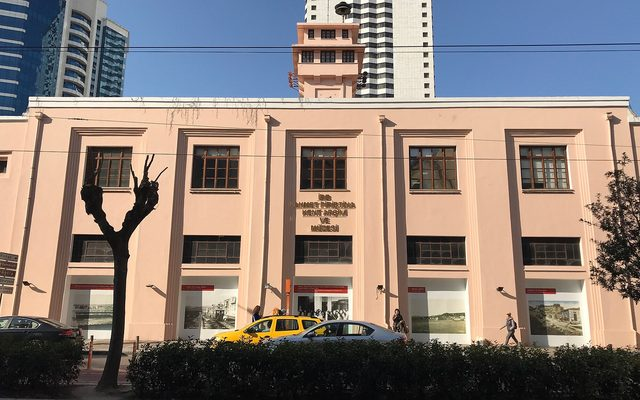
Archivo y Museo de la Ciudad Ahmet PiriştinaIzmir · Museo Sinagoga AhridaEstambul · Edificio religioso
Sinagoga AhridaEstambul · Edificio religioso Museo de Obras de MaderaEskişehir · MuseoYacimiento de EgasManisa · Yacimiento arqueológico
Museo de Obras de MaderaEskişehir · MuseoYacimiento de EgasManisa · Yacimiento arqueológico Yacimiento de AizanoiKütahya · Yacimiento arqueológicoAkalissosAntalya · Yacimiento arqueológicoMuseo Monumento de AkdamarVan · Museo
Yacimiento de AizanoiKütahya · Yacimiento arqueológicoAkalissosAntalya · Yacimiento arqueológicoMuseo Monumento de AkdamarVan · Museo AkkaleMersin · Yacimiento arqueológicoValle de los Monasterios de AksarayAksaray · Yacimiento arqueológico
AkkaleMersin · Yacimiento arqueológicoValle de los Monasterios de AksarayAksaray · Yacimiento arqueológico Museo de AksarayAksaray · Museo
Museo de AksarayAksaray · Museo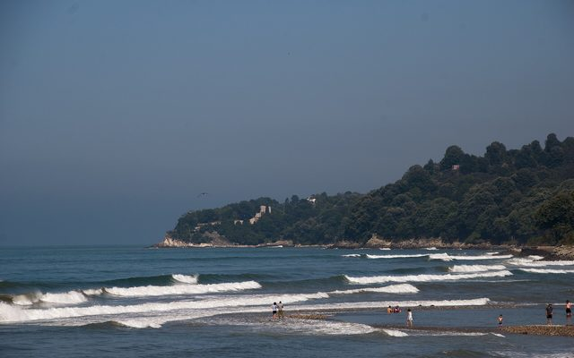
Castillo de Akçakoca (genovés)Düzce · Castillo y edificio histórico Museo Arqueológico y Etnográfico Nasreddin Hoca de AkşehirKonya · MuseoTumba de AkşemseddinBolu · Edificio religioso
Museo Arqueológico y Etnográfico Nasreddin Hoca de AkşehirKonya · MuseoTumba de AkşemseddinBolu · Edificio religioso Yacimiento de AlabandaAydın · Yacimiento arqueológico
Yacimiento de AlabandaAydın · Yacimiento arqueológico Museo y yacimiento de AlacahöyükÇorum · Yacimiento arqueológico
Museo y yacimiento de AlacahöyükÇorum · Yacimiento arqueológico Mezquita de AlaeddinKonya · Edificio religiosoCasa Museo Alaeddin YavaşçaKilis · Museo
Mezquita de AlaeddinKonya · Edificio religiosoCasa Museo Alaeddin YavaşçaKilis · Museo Playa de las tortugas de AlagadiGirne (Kyrenia) · Espacio natural
Playa de las tortugas de AlagadiGirne (Kyrenia) · Espacio natural Museo del Cuartel de AlagözAnkara · Museo
Museo del Cuartel de AlagözAnkara · Museo Monasterio de AlahanMersin · Edificio religiosoCasa Museo de Atatürk en AlanyaAntalya · Museo
Monasterio de AlahanMersin · Edificio religiosoCasa Museo de Atatürk en AlanyaAntalya · Museo Castillo de AlanyaAntalya · Castillo y edificio histórico
Castillo de AlanyaAntalya · Castillo y edificio histórico Museo de AlanyaAntalya · Museo
Museo de AlanyaAntalya · Museo AlarahanAntalya · Castillo y edificio histórico
AlarahanAntalya · Castillo y edificio histórico Alay HanAksaray · Castillo y edificio históricoMuseo del Intercambio de AlaçamSamsun · Museo
Alay HanAksaray · Castillo y edificio históricoMuseo del Intercambio de AlaçamSamsun · Museo Yacimiento de Alaşehir (Filadelfia)Manisa · Yacimiento arqueológico
Yacimiento de Alaşehir (Filadelfia)Manisa · Yacimiento arqueológico Yacimiento de Alejandría de TróadeÇanakkale · Yacimiento arqueológicoMuseo de Historia Natural Ali DemirsoyErzincan · Museo
Yacimiento de Alejandría de TróadeÇanakkale · Yacimiento arqueológicoMuseo de Historia Natural Ali DemirsoyErzincan · Museo Yacimiento de AlindaAydın · Yacimiento arqueológico
Yacimiento de AlindaAydın · Yacimiento arqueológico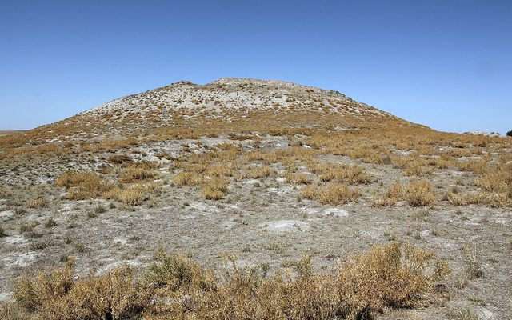
Alişar HöyükYozgat · Yacimiento arqueológico Museo al Aire Libre de AltınköyAnkara · Museo
Museo al Aire Libre de AltınköyAnkara · Museo AltıntepeErzincan · Yacimiento arqueológico
AltıntepeErzincan · Yacimiento arqueológico Castillo de AmasraBartın · Castillo y edificio histórico
Castillo de AmasraBartın · Castillo y edificio histórico Museo de AmasraBartın · Museo
Museo de AmasraBartın · Museo Museo de AmasyaAmasya · Museo
Museo de AmasyaAmasya · Museo Tumba rupestre de AmintasMuğla · Yacimiento arqueológico
Tumba rupestre de AmintasMuğla · Yacimiento arqueológico Colina de AmisosSamsun · Yacimiento arqueológico
Colina de AmisosSamsun · Yacimiento arqueológico Ciudad antigua de AmorioAfyonkarahisar · Yacimiento arqueológico
Ciudad antigua de AmorioAfyonkarahisar · Yacimiento arqueológico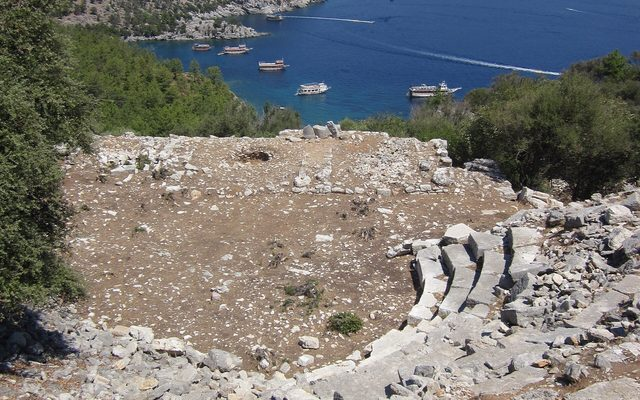
Ciudad antigua de AmosMuğla · Yacimiento arqueológicoAmyzonAydın · Yacimiento arqueológico Anadolu HisarıEstambul · Castillo y edificio histórico
Anadolu HisarıEstambul · Castillo y edificio histórico Museo de las Civilizaciones de AnatoliaAnkara · Museo
Museo de las Civilizaciones de AnatoliaAnkara · Museo Museo al Aire Libre «Aldea Viva de Anatolia»Ankara · MuseoMuseo de AnamurMersin · Museo
Museo al Aire Libre «Aldea Viva de Anatolia»Ankara · MuseoMuseo de AnamurMersin · Museo Yacimiento de AnavarzaAdana · Yacimiento arqueológico
Yacimiento de AnavarzaAdana · Yacimiento arqueológico Yacimiento de AnemurioMersin · Yacimiento arqueológico
Yacimiento de AnemurioMersin · Yacimiento arqueológico Castillo de AnkaraAnkara · Castillo y edificio histórico
Castillo de AnkaraAnkara · Castillo y edificio histórico Museo del Juguete de AnkaraAnkara · Museo
Museo del Juguete de AnkaraAnkara · Museo Teatro romano de AnkaraAnkara · Yacimiento arqueológico
Teatro romano de AnkaraAnkara · Yacimiento arqueológico Casa Museo de Atatürk en AntalyaAntalya · Museo
Casa Museo de Atatürk en AntalyaAntalya · Museo Museo Etnográfico de AntalyaAntalya · Museo
Museo Etnográfico de AntalyaAntalya · Museo Museo de AntalyaAntalya · MuseoMuseo de la Necrópolis de AntalyaAntalya · Museo
Museo de AntalyaAntalya · MuseoMuseo de la Necrópolis de AntalyaAntalya · Museo Museo del Juguete de AntalyaAntalya · Museo
Museo del Juguete de AntalyaAntalya · Museo Ciudad antigua de SyedraAntalya · Yacimiento arqueológico
Ciudad antigua de SyedraAntalya · Yacimiento arqueológico Ciudad antigua de AntandroBalıkesir · Yacimiento arqueológico
Ciudad antigua de AntandroBalıkesir · Yacimiento arqueológico Yacimiento de Antioquía de PisidiaIsparta · Yacimiento arqueológico
Yacimiento de Antioquía de PisidiaIsparta · Yacimiento arqueológico Antioquía de CragusAntalya · Yacimiento arqueológico
Antioquía de CragusAntalya · Yacimiento arqueológico AntifelosAntalya · Yacimiento arqueológico
AntifelosAntalya · Yacimiento arqueológico Iglesia de AntiphonitisGirne (Kyrenia) · Edificio religioso
Iglesia de AntiphonitisGirne (Kyrenia) · Edificio religioso AnıtkabirAnkara · Museo
AnıtkabirAnkara · Museo Ciudad antigua de AperlasAntalya · Yacimiento arqueológico
Ciudad antigua de AperlasAntalya · Yacimiento arqueológico Yacimiento de Apolo EsmintioÇanakkale · Yacimiento arqueológico
Yacimiento de Apolo EsmintioÇanakkale · Yacimiento arqueológico Ciudad antigua de Apolonia (Licia)Antalya · Yacimiento arqueológico
Ciudad antigua de Apolonia (Licia)Antalya · Yacimiento arqueológico Monasterio de Apostolos Andreasİskele (Trikomo) · Edificio religioso
Monasterio de Apostolos Andreasİskele (Trikomo) · Edificio religioso Museo Ara GülerEstambul · Museo
Museo Ara GülerEstambul · Museo Ciudad antigua de AriasoAntalya · Yacimiento arqueológico
Ciudad antigua de AriasoAntalya · Yacimiento arqueológico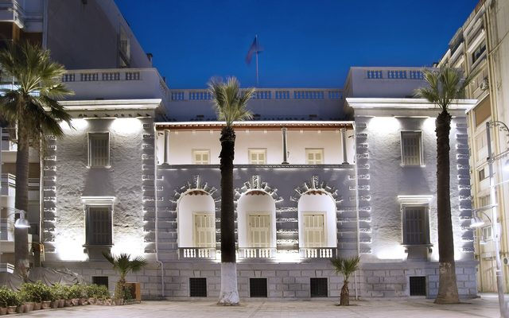
Centro de Arte ArkasIzmir · MuseoArneaiAntalya · Yacimiento arqueológico ArsadaMuğla · Yacimiento arqueológico
ArsadaMuğla · Yacimiento arqueológico Yacimiento de ArsameiaAdıyaman · Yacimiento arqueológico
Yacimiento de ArsameiaAdıyaman · Yacimiento arqueológico ArterEstambul · Museo
ArterEstambul · Museo Yacimiento de ArykandaAntalya · Yacimiento arqueológico
Yacimiento de ArykandaAntalya · Yacimiento arqueológico Complejo de Ashab-ı KehfKahramanmaraş · Edificio religioso
Complejo de Ashab-ı KehfKahramanmaraş · Edificio religioso Museo MilitarEstambul · Museo
Museo MilitarEstambul · Museo AspendosAntalya · Yacimiento arqueológico
AspendosAntalya · Yacimiento arqueológico Yacimiento de AssosÇanakkale · Yacimiento arqueológicoCasa Museo de Atatürk en DiyarbakırDiyarbakır · Museo
Yacimiento de AssosÇanakkale · Yacimiento arqueológicoCasa Museo de Atatürk en DiyarbakırDiyarbakır · Museo Residencia de Atatürk y Museo del FerrocarrilAnkara · Museo
Residencia de Atatürk y Museo del FerrocarrilAnkara · Museo Museo Atatürk (Şişli)Estambul · MuseoMuseo de Atatürk y Etnografía de UşakUşak · Museo
Museo Atatürk (Şişli)Estambul · MuseoMuseo de Atatürk y Etnografía de UşakUşak · Museo Museo Atatürk, Redif y EtnografíaKocaeli · Museo
Museo Atatürk, Redif y EtnografíaKocaeli · Museo Museo del Cine de Estambul Atlas 1948Estambul · Museo
Museo del Cine de Estambul Atlas 1948Estambul · Museo Templo de AugustoAnkara · Yacimiento arqueológico
Templo de AugustoAnkara · Yacimiento arqueológico Museo Palacio del Pabellón de CazaKocaeli · Museo
Museo Palacio del Pabellón de CazaKocaeli · Museo Santa IreneEstambul · Edificio religioso
Santa IreneEstambul · Edificio religioso Fortaleza de AyanisVan · Yacimiento arqueológico
Fortaleza de AyanisVan · Yacimiento arqueológico Castillo de Ayas (Yumurtalık)Adana · Castillo y edificio histórico
Castillo de Ayas (Yumurtalık)Adana · Castillo y edificio histórico Museo de Historia y Experiencia de Santa SofíaEstambul · Museo
Museo de Historia y Experiencia de Santa SofíaEstambul · Museo Gran Mezquita de Santa SofíaEstambul · Edificio religioso
Gran Mezquita de Santa SofíaEstambul · Edificio religioso Basílica de San Juan (Ayasuluk)Izmir · Yacimiento arqueológico
Basílica de San Juan (Ayasuluk)Izmir · Yacimiento arqueológico Castillo de AyasulukIzmir · Castillo y edificio histórico
Castillo de AyasulukIzmir · Castillo y edificio histórico Museo Arqueológico de AydınAydın · MuseoBasílica de Ayia Triasİskele (Trikomo) · Edificio religioso
Museo Arqueológico de AydınAydın · MuseoBasílica de Ayia Triasİskele (Trikomo) · Edificio religioso Pabellón de AynalıkavakEstambul · Castillo y edificio histórico
Pabellón de AynalıkavakEstambul · Castillo y edificio histórico Museo Monumento de San NicolásAntalya · MuseoCiudad subterránea de San MercurioAksaray · Ciudad subterráneaCamino de San PabloAntalya · Ruta de senderismo
Museo Monumento de San NicolásAntalya · MuseoCiudad subterránea de San MercurioAksaray · Ciudad subterráneaCamino de San PabloAntalya · Ruta de senderismo Alalakh (Tell Atchana)Hatay · Yacimiento arqueológico
Alalakh (Tell Atchana)Hatay · Yacimiento arqueológico Ağzıkara HanAksaray · Castillo y edificio histórico
Ağzıkara HanAksaray · Castillo y edificio histórico Museo Aşık VeyselSivas · Museo
Museo Aşık VeyselSivas · Museo Aşıklı HöyükAksaray · Yacimiento arqueológico
Aşıklı HöyükAksaray · Yacimiento arqueológico Parque Natural del Lago BafaMuğla · LagoMuseo de BafraSamsun · Museo
Parque Natural del Lago BafaMuğla · LagoMuseo de BafraSamsun · Museo Castillo de BakrasHatay · Castillo y edificio históricoCiudad antigua de BalburaBurdur · Yacimiento arqueológico
Castillo de BakrasHatay · Castillo y edificio históricoCiudad antigua de BalburaBurdur · Yacimiento arqueológico Museo Kuva-yi Milliye de BalıkesirBalıkesir · Museo
Museo Kuva-yi Milliye de BalıkesirBalıkesir · Museo Balıklıgöl (Estanque de los Peces Sagrados)Şanlıurfa · Edificio religioso
Balıklıgöl (Estanque de los Peces Sagrados)Şanlıurfa · Edificio religioso Museo de BandırmaBalıkesir · Museo
Museo de BandırmaBalıkesir · Museo Museo del Vapor BandırmaSamsun · Museo
Museo del Vapor BandırmaSamsun · Museo Museo de la BarbarieLefkoşa (Nicosia) · Museo
Museo de la BarbarieLefkoşa (Nicosia) · Museo BargiliaMuğla · Yacimiento arqueológico
BargiliaMuğla · Yacimiento arqueológico Museo de BatmanBatman · Museo
Museo de BatmanBatman · Museo Museo del Cuartel General del Frente OccidentalKonya · Museo
Museo del Cuartel General del Frente OccidentalKonya · Museo Museo Baksı de BayburtBayburt · MuseoCueva de BeldibiAntalya · Yacimiento arqueológico
Museo Baksı de BayburtBayburt · MuseoCueva de BeldibiAntalya · Yacimiento arqueológico Abadía de BellapaisGirne (Kyrenia) · Edificio religioso
Abadía de BellapaisGirne (Kyrenia) · Edificio religioso Museo de BergamaIzmir · Museo
Museo de BergamaIzmir · Museo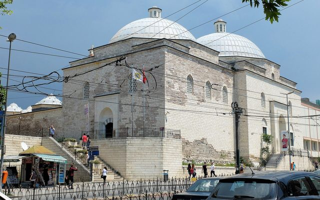
Museo de la Cultura del Hamam de BeyazıtEstambul · Museo BeycesultanDenizli · Yacimiento arqueológico
BeycesultanDenizli · Yacimiento arqueológico Museo del Vidrio y Cristal de BeykozEstambul · Museo
Museo del Vidrio y Cristal de BeykozEstambul · Museo Palacio de BeylerbeyiEstambul · Castillo y edificio histórico
Palacio de BeylerbeyiEstambul · Castillo y edificio histórico Museo Viviente de BeypazarıAnkara · Museo
Museo Viviente de BeypazarıAnkara · Museo Parque Nacional del Lago BeyşehirKonya · LagoMuseo Etnográfico de Beşkonaklar y Casa Tradicional de MalatyaMalatya · Museo
Parque Nacional del Lago BeyşehirKonya · LagoMuseo Etnográfico de Beşkonaklar y Casa Tradicional de MalatyaMalatya · Museo Montes Beşparmak (Pentadáctilo)Girne (Kyrenia) · Espacio naturalMuseo de BilecikBilecik · Museo
Montes Beşparmak (Pentadáctilo)Girne (Kyrenia) · Espacio naturalMuseo de BilecikBilecik · Museo Túmulos lidios de Bin TepeManisa · Yacimiento arqueológico
Túmulos lidios de Bin TepeManisa · Yacimiento arqueológico Binbirkilise (Mil y Una Iglesias)Karaman · Yacimiento arqueológico
Binbirkilise (Mil y Una Iglesias)Karaman · Yacimiento arqueológico Cisterna de Binbirdirek (Filoxeno)Estambul · Castillo y edificio histórico
Cisterna de Binbirdirek (Filoxeno)Estambul · Castillo y edificio histórico Mansión Çakırağa de BirgiIzmir · MuseoMuseo Etnográfico de BitlisBitlis · Museo
Mansión Çakırağa de BirgiIzmir · MuseoMuseo Etnográfico de BitlisBitlis · Museo Castillo de BitlisBitlis · Castillo y edificio histórico
Castillo de BitlisBitlis · Castillo y edificio histórico Yacimiento de BlaundosUşak · Yacimiento arqueológico
Yacimiento de BlaundosUşak · Yacimiento arqueológico Teatro antiguo de BodrumMuğla · Yacimiento arqueológicoSala del Pecio de Vidrio de Serçe Limanı (Bodrum)Muğla · Museo
Teatro antiguo de BodrumMuğla · Yacimiento arqueológicoSala del Pecio de Vidrio de Serçe Limanı (Bodrum)Muğla · Museo Museo de Arqueología Subacuática de BodrumMuğla · Museo
Museo de Arqueología Subacuática de BodrumMuğla · Museo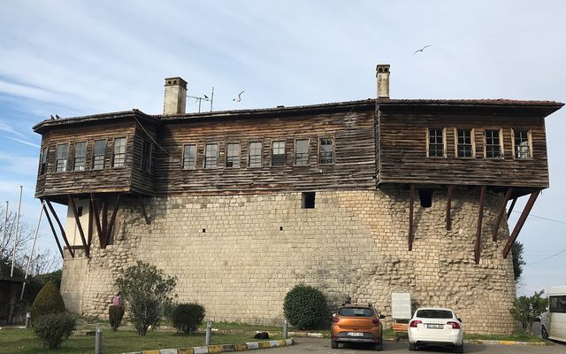
Castillo de BolamanOrdu · Castillo y edificio histórico Museo de BoluBolu · Museo
Museo de BoluBolu · Museo Boncuklu HöyükKonya · Yacimiento arqueológico
Boncuklu HöyükKonya · Yacimiento arqueológico Museo Arqueológico al Aire Libre de BostanlıIzmir · Museo
Museo Arqueológico al Aire Libre de BostanlıIzmir · Museo Acueducto de Valente (Bozdoğan)Estambul · Castillo y edificio históricoMuseo del Queso de BoğatepeKars · Museo
Acueducto de Valente (Bozdoğan)Estambul · Castillo y edificio históricoMuseo del Queso de BoğatepeKars · Museo Museo de BoğazköyÇorum · Museo
Museo de BoğazköyÇorum · Museo Castillo de BuffaventoGirne (Kyrenia) · Castillo y edificio histórico
Castillo de BuffaventoGirne (Kyrenia) · Castillo y edificio histórico Iglesia búlgara de San Esteban (Iglesia de Hierro)Estambul · Edificio religioso
Iglesia búlgara de San Esteban (Iglesia de Hierro)Estambul · Edificio religioso Museo de BurdurBurdur · Museo
Museo de BurdurBurdur · Museo Museo Arqueológico de BursaBursa · Museo
Museo Arqueológico de BursaBursa · Museo Casa Museo de Atatürk en BursaBursa · Museo
Casa Museo de Atatürk en BursaBursa · Museo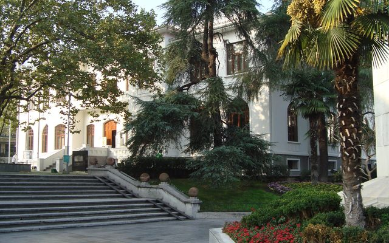
Museo de la Ciudad de BursaBursa · Museo Museo de Arte Turco e Islámico de BursaBursa · Museo
Museo de Arte Turco e Islámico de BursaBursa · Museo Gran Mezquita de BursaBursa · Edificio religioso
Gran Mezquita de BursaBursa · Edificio religioso Mezquita Verde y Mausoleo Verde de BursaBursa · Edificio religiosoBasílica del Lago de İznikBursa · Edificio religioso
Mezquita Verde y Mausoleo Verde de BursaBursa · Edificio religiosoBasílica del Lago de İznikBursa · Edificio religioso Madrasa de Büyük AğaAmasya · Edificio religioso
Madrasa de Büyük AğaAmasya · Edificio religioso Büyük HanLefkoşa (Nicosia) · Castillo y edificio histórico
Büyük HanLefkoşa (Nicosia) · Castillo y edificio histórico Museo de los Mosaicos del Gran PalacioEstambul · Museo
Museo de los Mosaicos del Gran PalacioEstambul · Museo Madrasa de CacabeyKırşehir · Edificio religioso
Madrasa de CacabeyKırşehir · Edificio religioso Casa de Cahit Sıtkı Tarancı - Museo EtnográficoDiyarbakır · MuseoCuevas de CehennemağzıZonguldak · Espacio natural
Casa de Cahit Sıtkı Tarancı - Museo EtnográficoDiyarbakır · MuseoCuevas de CehennemağzıZonguldak · Espacio natural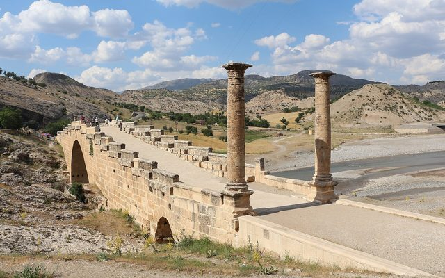
Puente de CendereAdıyaman · Castillo y edificio histórico Museo de Arte de CendereEstambul · Museo
Museo de Arte de CendereEstambul · Museo CerModernAnkara · Museo
CerModernAnkara · Museo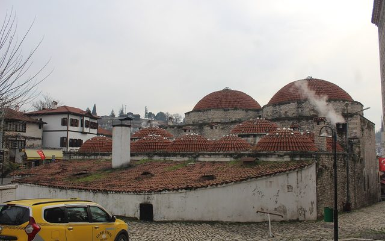
Cinci HanKarabük · Castillo y edificio histórico Aldea de CumalıkızıkBursa · Castillo y edificio histórico
Aldea de CumalıkızıkBursa · Castillo y edificio histórico Museo de la RepúblicaAnkara · Museo
Museo de la RepúblicaAnkara · Museo Río DalamanMuğla · Rafting
Río DalamanMuğla · Rafting Yacimiento de DaraMardin · Yacimiento arqueológico
Yacimiento de DaraMardin · Yacimiento arqueológico Ciudad antigua de DascilioBalıkesir · Yacimiento arqueológicoEstación de esquí de DavrazIsparta · Estación de esquíFundición de DemirköyKırklareli · Yacimiento arqueológico
Ciudad antigua de DascilioBalıkesir · Yacimiento arqueológicoEstación de esquí de DavrazIsparta · Estación de esquíFundición de DemirköyKırklareli · Yacimiento arqueológico Museo de Atatürk y Etnografía de DenizliDenizli · Museo
Museo de Atatürk y Etnografía de DenizliDenizli · Museo Museo de la Ciudad de DenizliDenizli · Museo
Museo de la Ciudad de DenizliDenizli · Museo Yacimiento de TrípolisDenizli · Yacimiento arqueológicoDerbeKaraman · Yacimiento arqueológico
Yacimiento de TrípolisDenizli · Yacimiento arqueológicoDerbeKaraman · Yacimiento arqueológico Mansión de Derviş PaşaLefkoşa (Nicosia) · Museo
Mansión de Derviş PaşaLefkoşa (Nicosia) · Museo Cementerio del EstadoAnkara · Castillo y edificio histórico
Cementerio del EstadoAnkara · Castillo y edificio histórico Museo de los Coches DevrimEskişehir · Museo
Museo de los Coches DevrimEskişehir · Museo Monasterio de DeyrulzafaranMardin · Edificio religioso
Monasterio de DeyrulzafaranMardin · Edificio religioso Túnel del Tigris (cuevas de Birkleyn)Diyarbakır · Yacimiento arqueológico
Túnel del Tigris (cuevas de Birkleyn)Diyarbakır · Yacimiento arqueológico Templo de Apolo en DídimaAydın · Yacimiento arqueológico
Templo de Apolo en DídimaAydın · Yacimiento arqueológico Gran Mezquita y Hospital de DivriğiSivas · Edificio religioso
Gran Mezquita y Hospital de DivriğiSivas · Edificio religioso Museo Arqueológico de DiyarbakırDiyarbakır · Museo
Museo Arqueológico de DiyarbakırDiyarbakır · Museo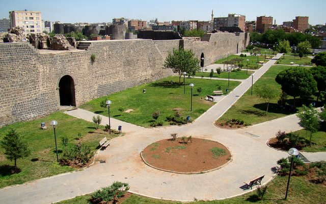
Murallas de DiyarbakırDiyarbakır · Castillo y edificio histórico Gran Mezquita de DiyarbakırDiyarbakır · Edificio religioso
Gran Mezquita de DiyarbakırDiyarbakır · Edificio religioso Palacio de DolmabahçeEstambul · Castillo y edificio históricoMuseo de Historia NaturalBurdur · Museo
Palacio de DolmabahçeEstambul · Castillo y edificio históricoMuseo de Historia NaturalBurdur · Museo Cueva de DupnisaKırklareli · Espacio natural
Cueva de DupnisaKırklareli · Espacio natural Cascadas de DüdenAntalya · CascadaDülük (Doliche)Gaziantep · Yacimiento arqueológico
Cascadas de DüdenAntalya · CascadaDülük (Doliche)Gaziantep · Yacimiento arqueológico Gran Sinagoga de EdirneEdirne · Edificio religiosoMuseo de Historia de los Balcanes del Bastión de HıdırlıkEdirne · Museo
Gran Sinagoga de EdirneEdirne · Edificio religiosoMuseo de Historia de los Balcanes del Bastión de HıdırlıkEdirne · Museo Torre Macedonia de EdirneEdirne · Castillo y edificio histórico
Torre Macedonia de EdirneEdirne · Castillo y edificio histórico Museo de EdirneEdirne · Museo
Museo de EdirneEdirne · Museo Palacio de Edirne (Saray-ı Cedid)Edirne · Yacimiento arqueológico
Palacio de Edirne (Saray-ı Cedid)Edirne · Yacimiento arqueológico Mezquita Selimiye de EdirneEdirne · Edificio religiosoMuseo de la Experiencia de ÉfesoIzmir · Museo
Mezquita Selimiye de EdirneEdirne · Edificio religiosoMuseo de la Experiencia de ÉfesoIzmir · Museo Museo de ÉfesoIzmir · Museo
Museo de ÉfesoIzmir · Museo Casas del Ladera de ÉfesoIzmir · Yacimiento arqueológico
Casas del Ladera de ÉfesoIzmir · Yacimiento arqueológico Monumento hitita de EflatunpınarKonya · Yacimiento arqueológicoMuseo de Historia Natural de la Universidad del EgeoIzmir · Museo
Monumento hitita de EflatunpınarKonya · Yacimiento arqueológicoMuseo de Historia Natural de la Universidad del EgeoIzmir · Museo Elaiussa SebasteMersin · Yacimiento arqueológicoMuseo de ElazığElazığ · MuseoMuseo de la Ciudad de ElbistanKahramanmaraş · Museo
Elaiussa SebasteMersin · Yacimiento arqueológicoMuseo de ElazığElazığ · MuseoMuseo de la Ciudad de ElbistanKahramanmaraş · Museo Museo de Arte Contemporáneo ElgizEstambul · MuseoMuseo de ElmalıAntalya · MuseoMuseo de Cocina Emine GöğüşGaziantep · Museo
Museo de Arte Contemporáneo ElgizEstambul · MuseoMuseo de ElmalıAntalya · MuseoMuseo de Cocina Emine GöğüşGaziantep · Museo Mezquita de Emir SultanBursa · Edificio religiosoCastillo de Enez (Ainos)Edirne · Castillo y edificio histórico
Mezquita de Emir SultanBursa · Edificio religiosoCastillo de Enez (Ainos)Edirne · Castillo y edificio histórico Yacimiento de Enkomi (Alasia)Gazimağusa (Famagusta) · Yacimiento arqueológico
Yacimiento de Enkomi (Alasia)Gazimağusa (Famagusta) · Yacimiento arqueológico Estación de esquí de ErciyesKayseri · Estación de esquíMuseo de EreğliKonya · Museo
Estación de esquí de ErciyesKayseri · Estación de esquíMuseo de EreğliKonya · Museo Cascadas de Tatlıca (Erfelek)Sinop · Cascada
Cascadas de Tatlıca (Erfelek)Sinop · Cascada Museo de Arqueología y Arte ErimtanAnkara · MuseoMuseo Arqueológico y Etnográfico Ahmet Keleşoğlu de ErmenekKaraman · Museo
Museo de Arqueología y Arte ErimtanAnkara · MuseoMuseo Arqueológico y Etnográfico Ahmet Keleşoğlu de ErmenekKaraman · Museo Ciudad antigua de EritrasIzmir · Yacimiento arqueológico
Ciudad antigua de EritrasIzmir · Yacimiento arqueológico Museo de ErzincanErzincan · Museo
Museo de ErzincanErzincan · Museo Casa Museo de Atatürk en ErzurumErzurum · Museo
Casa Museo de Atatürk en ErzurumErzurum · Museo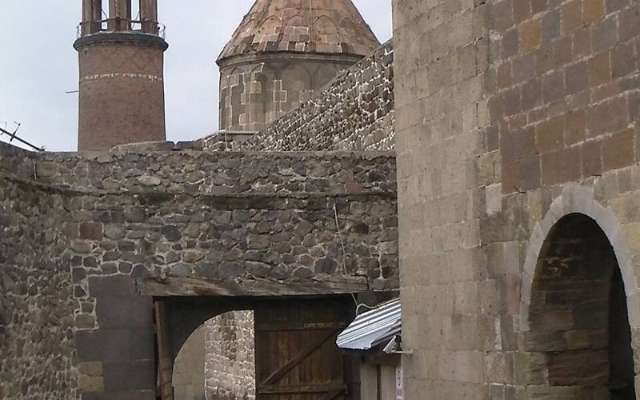
Castillo de ErzurumErzurum · Castillo y edificio histórico Museo de ErzurumErzurum · MuseoMuseo de Pintura y Escultura de ErzurumErzurum · Museo
Museo de ErzurumErzurum · MuseoMuseo de Pintura y Escultura de ErzurumErzurum · Museo Antigua EsmirnaIzmir · Yacimiento arqueológico
Antigua EsmirnaIzmir · Yacimiento arqueológico Museo de la Liberación de EskişehirEskişehir · MuseoEtennaAntalya · Yacimiento arqueológico
Museo de la Liberación de EskişehirEskişehir · MuseoEtennaAntalya · Yacimiento arqueológico Museo Arqueológico EtiEskişehir · Museo
Museo Arqueológico EtiEskişehir · Museo Museo EtnográficoAnkara · Museo
Museo EtnográficoAnkara · Museo Camino de Evliya ÇelebiKütahya · Ruta de senderismo
Camino de Evliya ÇelebiKütahya · Ruta de senderismo Mezquita de Eyüp SultanEstambul · Edificio religioso
Mezquita de Eyüp SultanEstambul · Edificio religioso Castillo de Eğil y tumbas de los profetasDiyarbakır · Castillo y edificio histórico
Castillo de Eğil y tumbas de los profetasDiyarbakır · Castillo y edificio histórico Lago EğirdirIsparta · Lago
Lago EğirdirIsparta · Lago Museo de Caricaturas de EducaciónEskişehir · Museo
Museo de Caricaturas de EducaciónEskişehir · Museo Monumento de FasıllarKonya · Yacimiento arqueológicoPatriarcado Ecuménico e iglesia de San JorgeEstambul · Edificio religioso
Monumento de FasıllarKonya · Yacimiento arqueológicoPatriarcado Ecuménico e iglesia de San JorgeEstambul · Edificio religioso Museo del FenerbahçeEstambul · Museo
Museo del FenerbahçeEstambul · Museo Isla de Gemiler (Fethiye)Muğla · Yacimiento arqueológico
Isla de Gemiler (Fethiye)Muğla · Yacimiento arqueológico Kayaköy (Fethiye)Muğla · Yacimiento arqueológico
Kayaköy (Fethiye)Muğla · Yacimiento arqueológico Yacimiento del Letoon (Fethiye)Muğla · Yacimiento arqueológico
Yacimiento del Letoon (Fethiye)Muğla · Yacimiento arqueológico Museo FethiyeEstambul · MuseoMuseo de FethiyeMuğla · Museo
Museo FethiyeEstambul · MuseoMuseo de FethiyeMuğla · Museo Yacimiento de Pinara (Fethiye)Muğla · Yacimiento arqueológico
Yacimiento de Pinara (Fethiye)Muğla · Yacimiento arqueológico Yacimiento de Tlos (Fethiye)Muğla · Yacimiento arqueológicoCisterna de FildamıEstambul · Castillo y edificio históricoYacimiento de Filyos (Tios)Zonguldak · Yacimiento arqueológico
Yacimiento de Tlos (Fethiye)Muğla · Yacimiento arqueológicoCisterna de FildamıEstambul · Castillo y edificio históricoYacimiento de Filyos (Tios)Zonguldak · Yacimiento arqueológico Pabellón Marino de Atatürk en FloryaEstambul · Museo
Pabellón Marino de Atatürk en FloryaEstambul · Museo Camino FrigioEskişehir · Ruta de senderismo
Camino FrigioEskişehir · Ruta de senderismo Arroyo FırtınaRize · RaftingGagaiAntalya · Yacimiento arqueológico
Arroyo FırtınaRize · RaftingGagaiAntalya · Yacimiento arqueológico Museo de la Casa Mevleví de GálataEstambul · Museo
Museo de la Casa Mevleví de GálataEstambul · Museo Gazi KöşküDiyarbakır · Castillo y edificio histórico
Gazi KöşküDiyarbakır · Castillo y edificio histórico Museo GaziSamsun · Museo
Museo GaziSamsun · Museo Museo Arqueológico de GaziantepGaziantep · Museo
Museo Arqueológico de GaziantepGaziantep · Museo Castillo de GaziantepGaziantep · Castillo y edificio histórico
Castillo de GaziantepGaziantep · Castillo y edificio histórico Museo Panorama de la Defensa de GaziantepGaziantep · Museo
Museo Panorama de la Defensa de GaziantepGaziantep · Museo Museo de la Guerra de GeliboluÇanakkale · Museo
Museo de la Guerra de GeliboluÇanakkale · Museo Sitio Histórico de GalípoliÇanakkale · Yacimiento arqueológico
Sitio Histórico de GalípoliÇanakkale · Yacimiento arqueológico Santuario de GergaAydın · Yacimiento arqueológicoÁrea de mosaicos de GermaniciaKahramanmaraş · Yacimiento arqueológico
Santuario de GergaAydın · Yacimiento arqueológicoÁrea de mosaicos de GermaniciaKahramanmaraş · Yacimiento arqueológico Castillo de GiresunGiresun · Castillo y edificio históricoMuseo de GiresunGiresun · Museo
Castillo de GiresunGiresun · Castillo y edificio históricoMuseo de GiresunGiresun · Museo Cascada de GirlevikErzincan · Cascada
Cascada de GirlevikErzincan · Cascada Sendero de montaña de KyreniaGirne (Kyrenia) · Ruta de senderismo
Sendero de montaña de KyreniaGirne (Kyrenia) · Ruta de senderismo Castillo de Kyrenia y Museo del NaufragioGirne (Kyrenia) · Castillo y edificio histórico
Castillo de Kyrenia y Museo del NaufragioGirne (Kyrenia) · Castillo y edificio histórico Museo de Iconos de KyreniaGirne (Kyrenia) · Museo
Museo de Iconos de KyreniaGirne (Kyrenia) · Museo GökkaleMersin · Yacimiento arqueológico
GökkaleMersin · Yacimiento arqueológico Museo del Ajedrez de la Fundación GökyayAnkara · Museo
Museo del Ajedrez de la Fundación GökyayAnkara · Museo Parque Natural del Lago del cráter de GölcükIsparta · Lago
Parque Natural del Lago del cráter de GölcükIsparta · Lago Gölyazı (Apolonia del Ríndaco)Bursa · Yacimiento arqueológico
Gölyazı (Apolonia del Ríndaco)Bursa · Yacimiento arqueológico Cañón de GöynükAntalya · Cañón
Cañón de GöynükAntalya · Cañón Castillo de GözneMersin · Castillo y edificio histórico
Castillo de GözneMersin · Castillo y edificio histórico Iglesia de San Juan de GülşehirNevşehir · Edificio religiosoMuseo de GümüşhaneGümüşhane · Museo
Iglesia de San Juan de GülşehirNevşehir · Edificio religiosoMuseo de GümüşhaneGümüşhane · Museo Mausoleo de GümüşkesenMuğla · Yacimiento arqueológico
Mausoleo de GümüşkesenMuğla · Yacimiento arqueológico Monasterio y ciudad subterránea de GümüşlerNiğde · Ciudad subterránea
Monasterio y ciudad subterránea de GümüşlerNiğde · Ciudad subterránea Museo Etnográfico de la Mansión GüpgüpoğluKayseri · Museo
Museo Etnográfico de la Mansión GüpgüpoğluKayseri · Museo Museo de Arqueología e Historia Natural de GüzelyurtGüzelyurt (Morfou) · Museo
Museo de Arqueología e Historia Natural de GüzelyurtGüzelyurt (Morfou) · Museo Güzelyurt y el Valle de los MonasteriosAksaray · Edificio religioso
Güzelyurt y el Valle de los MonasteriosAksaray · Edificio religioso Monasterio de KtutsVan · Edificio religioso
Monasterio de KtutsVan · Edificio religioso Mezquita de Habib-i NeccarHatay · Edificio religioso
Mezquita de Habib-i NeccarHatay · Edificio religioso Mezquita de Hacı Bayram VeliAnkara · Edificio religioso
Mezquita de Hacı Bayram VeliAnkara · Edificio religioso Museo de HacıbektaşNevşehir · Museo
Museo de HacıbektaşNevşehir · Museo Hacılar HöyükBurdur · Yacimiento arqueológico
Hacılar HöyükBurdur · Yacimiento arqueológico Puerta de AdrianoAntalya · Castillo y edificio históricoYacimiento de HadrianópolisKarabük · Yacimiento arqueológico
Puerta de AdrianoAntalya · Castillo y edificio históricoYacimiento de HadrianópolisKarabük · Yacimiento arqueológico Museo Hafıza 15 de JulioEstambul · Museo
Museo Hafıza 15 de JulioEstambul · Museo Museo de Mosaicos de HaleplibahçeŞanlıurfa · MuseoBastión de Hamidiye y Museo de Historia de las Batallas de ÇanakkaleÇanakkale · Museo
Museo de Mosaicos de HaleplibahçeŞanlıurfa · MuseoBastión de Hamidiye y Museo de Historia de las Batallas de ÇanakkaleÇanakkale · Museo Caravasar de Han el Ba'rurŞanlıurfa · Castillo y edificio históricoCascadas de HarbiyeHatay · Cascada
Caravasar de Han el Ba'rurŞanlıurfa · Castillo y edificio históricoCascadas de HarbiyeHatay · Cascada Castillo de HarputElazığ · Castillo y edificio histórico
Castillo de HarputElazığ · Castillo y edificio histórico Yacimiento de HarránŞanlıurfa · Yacimiento arqueológico
Yacimiento de HarránŞanlıurfa · Yacimiento arqueológico Castillo de HarşenaAmasya · Castillo y edificio histórico
Castillo de HarşenaAmasya · Castillo y edificio histórico Han de Hasan PaşaDiyarbakır · Castillo y edificio históricoMuseo Etnográfico Hasan SüzerGaziantep · Museo
Han de Hasan PaşaDiyarbakır · Castillo y edificio históricoMuseo Etnográfico Hasan SüzerGaziantep · Museo Museo y yacimiento de HasankeyfBatman · Yacimiento arqueológico
Museo y yacimiento de HasankeyfBatman · Yacimiento arqueológico Museo Arqueológico de HatayHatay · MuseoMuseo Arqueológico Necmi Asfuroğlu de HatayHatay · Museo
Museo Arqueológico de HatayHatay · MuseoMuseo Arqueológico Necmi Asfuroğlu de HatayHatay · Museo Museo de la Fuerza Aérea de AnkaraAnkara · Museo
Museo de la Fuerza Aérea de AnkaraAnkara · Museo Iglesia de los Santos Apóstoles (Mezquita Kümbet)Kars · Edificio religiosoCasa de Atatürk en HavzaSamsun · Museo
Iglesia de los Santos Apóstoles (Mezquita Kümbet)Kars · Edificio religiosoCasa de Atatürk en HavzaSamsun · Museo Lago HazarElazığ · Lago
Lago HazarElazığ · Lago Mansión HazeranlarAmasya · Museo
Mansión HazeranlarAmasya · Museo Memorial de HellesÇanakkale · Yacimiento arqueológico
Memorial de HellesÇanakkale · Yacimiento arqueológico Heraclea del LatmosMuğla · Yacimiento arqueológico
Heraclea del LatmosMuğla · Yacimiento arqueológico Heraclea SalbaceDenizli · Yacimiento arqueológico
Heraclea SalbaceDenizli · Yacimiento arqueológico Museo Arqueológico de Hierápolis (Pamukkale)Denizli · MuseoMuseo de Cámaras Hilmi NakipoğluEstambul · MuseoMuseo de Historia Viva y Dioramas HisartEstambul · Museo
Museo Arqueológico de Hierápolis (Pamukkale)Denizli · MuseoMuseo de Cámaras Hilmi NakipoğluEstambul · MuseoMuseo de Historia Viva y Dioramas HisartEstambul · Museo Camino HititaÇorum · Ruta de senderismo
Camino HititaÇorum · Ruta de senderismo Cañón de HormaKastamonu · Cañón
Cañón de HormaKastamonu · Cañón Castillo de HoşapVan · Castillo y edificio históricoHyllarimaMuğla · Yacimiento arqueológico
Castillo de HoşapVan · Castillo y edificio históricoHyllarimaMuğla · Yacimiento arqueológico Yacimiento de IasosMuğla · Yacimiento arqueológico
Yacimiento de IasosMuğla · Yacimiento arqueológico IdebessosAntalya · Yacimiento arqueológico
IdebessosAntalya · Yacimiento arqueológico Pabellón de IhlamurEstambul · Castillo y edificio histórico
Pabellón de IhlamurEstambul · Castillo y edificio histórico Valle de IhlaraAksaray · Yacimiento arqueológico
Valle de IhlaraAksaray · Yacimiento arqueológico Estación de esquí de IlgazKastamonu · Estación de esquí
Estación de esquí de IlgazKastamonu · Estación de esquí Ciudad antigua de IotapeAntalya · Yacimiento arqueológico
Ciudad antigua de IotapeAntalya · Yacimiento arqueológico Puente de IrgandıBursa · Castillo y edificio históricoIsindaAntalya · Yacimiento arqueológico
Puente de IrgandıBursa · Castillo y edificio históricoIsindaAntalya · Yacimiento arqueológico Museo de IspartaIsparta · Museo
Museo de IspartaIsparta · Museo Monumento y Museo de los Mártires Turcos de IğdırIğdır · MuseoMuseo de la GendarmeríaAnkara · Museo
Monumento y Museo de los Mártires Turcos de IğdırIğdır · MuseoMuseo de la GendarmeríaAnkara · Museo Necrópolis de JuliópolisAnkara · Yacimiento arqueológico
Necrópolis de JuliópolisAnkara · Yacimiento arqueológico Puente de Justiniano (Beşköprü)Sakarya · Castillo y edificio histórico
Puente de Justiniano (Beşköprü)Sakarya · Castillo y edificio histórico Centro de Interpretación de KabatepeÇanakkale · MuseoKadifekale (monte Pagos)Izmir · Castillo y edificio histórico
Centro de Interpretación de KabatepeÇanakkale · MuseoKadifekale (monte Pagos)Izmir · Castillo y edificio histórico Ciudad antigua de CadiandaMuğla · Yacimiento arqueológicoYacimiento de KadıkalesiAydın · Yacimiento arqueológicoMuseo de los Mártires del 15 de Julio y de la Democracia de KahramankazanAnkara · Museo
Ciudad antigua de CadiandaMuğla · Yacimiento arqueológicoYacimiento de KadıkalesiAydın · Yacimiento arqueológicoMuseo de los Mártires del 15 de Julio y de la Democracia de KahramankazanAnkara · Museo Museo de KahramanmaraşKahramanmaraş · Museo
Museo de KahramanmaraşKahramanmaraş · Museo Fortaleza de Yenikale en KahtaAdıyaman · Yacimiento arqueológico
Fortaleza de Yenikale en KahtaAdıyaman · Yacimiento arqueológico Museo Arqueológico de Kaman KalehöyükKırşehir · Yacimiento arqueológicoMuseo del Terremoto de KandilliEstambul · MuseoKandybaAntalya · Yacimiento arqueológico
Museo Arqueológico de Kaman KalehöyükKırşehir · Yacimiento arqueológicoMuseo del Terremoto de KandilliEstambul · MuseoKandybaAntalya · Yacimiento arqueológico Yacimiento de KanlıdivaneMersin · Yacimiento arqueológico
Yacimiento de KanlıdivaneMersin · Yacimiento arqueológico Kanlıdivane (Kanytelis)Mersin · Yacimiento arqueológico
Kanlıdivane (Kanytelis)Mersin · Yacimiento arqueológico Castillo de Kantaraİskele (Trikomo) · Castillo y edificio histórico
Castillo de Kantaraİskele (Trikomo) · Castillo y edificio histórico Cascadas de KapuzbaşıKayseri · Cascada
Cascadas de KapuzbaşıKayseri · Cascada Tumba rupestre de KapılıkayaÇorum · Yacimiento arqueológico
Tumba rupestre de KapılıkayaÇorum · Yacimiento arqueológico Relieve rupestre de KarabelIzmir · Yacimiento arqueológicoMuseo de SafranboluKarabük · Museo
Relieve rupestre de KarabelIzmir · Yacimiento arqueológicoMuseo de SafranboluKarabük · Museo Museo Etnográfico de KaracasuAydın · Museo
Museo Etnográfico de KaracasuAydın · Museo Museo de Karadeniz EreğliZonguldak · Museo
Museo de Karadeniz EreğliZonguldak · Museo Karagöl (Borçka)Artvin · Lago
Karagöl (Borçka)Artvin · Lago Yacimiento de KarahantepeŞanlıurfa · Yacimiento arqueológico
Yacimiento de KarahantepeŞanlıurfa · Yacimiento arqueológico Cueva de KarainAntalya · Espacio natural
Cueva de KarainAntalya · Espacio natural KarakabaklıMersin · Yacimiento arqueológico
KarakabaklıMersin · Yacimiento arqueológico Túmulo de KarakuşAdıyaman · Yacimiento arqueológico
Túmulo de KarakuşAdıyaman · Yacimiento arqueológico Museo de KaramanKaraman · Museo
Museo de KaramanKaraman · Museo Cañón Oscuro (Karanlık Kanyon)Erzincan · Cañón
Cañón Oscuro (Karanlık Kanyon)Erzincan · Cañón Museo de Karatay (Museo de los Azulejos)Konya · Museo
Museo de Karatay (Museo de los Azulejos)Konya · Museo Museo y yacimiento de Karatepe-AslantaşOsmaniye · Yacimiento arqueológico
Museo y yacimiento de Karatepe-AslantaşOsmaniye · Yacimiento arqueológico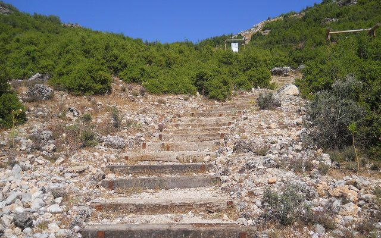
Camino CarioMuğla · Ruta de senderismo Mezquita de Kariye (Chora)Estambul · Edificio religioso
Mezquita de Kariye (Chora)Estambul · Edificio religioso Ciudad antigua de KarkemishGaziantep · Yacimiento arqueológico
Ciudad antigua de KarkemishGaziantep · Yacimiento arqueológico Parque Nacional de Karpaz y playa Golden Beachİskele (Trikomo) · Espacio natural
Parque Nacional de Karpaz y playa Golden Beachİskele (Trikomo) · Espacio natural Museo de Historia Bélica del Frente del Cáucaso de KarsKars · Museo
Museo de Historia Bélica del Frente del Cáucaso de KarsKars · Museo Castillo de KarsKars · Castillo y edificio histórico
Castillo de KarsKars · Castillo y edificio histórico Museo de KarsKars · MuseoEstación de esquí de KartalkayaBolu · Estación de esquí
Museo de KarsKars · MuseoEstación de esquí de KartalkayaBolu · Estación de esquí Estación de esquí de KartepeKocaeli · Estación de esquí
Estación de esquí de KartepeKocaeli · Estación de esquí Yacimiento de CastabalaOsmaniye · Yacimiento arqueológicoMuseo de KastamonuKastamonu · Museo
Yacimiento de CastabalaOsmaniye · Yacimiento arqueológicoMuseo de KastamonuKastamonu · Museo Madrasa KasımiyeMardin · Edificio religioso
Madrasa KasımiyeMardin · Edificio religioso Yacimiento de CaunoMuğla · Yacimiento arqueológico
Yacimiento de CaunoMuğla · Yacimiento arqueológico Museo Arqueológico de KayseriKayseri · Museo
Museo Arqueológico de KayseriKayseri · Museo Casa Museo de Atatürk en KayseriKayseri · Museo
Casa Museo de Atatürk en KayseriKayseri · Museo Castillo de KayseriKayseri · Castillo y edificio histórico
Castillo de KayseriKayseri · Castillo y edificio histórico Montes KaçkarRize · Ruta de senderismo
Montes KaçkarRize · Ruta de senderismo Ciudad Sumergida de KekovaAntalya · Yacimiento arqueológico
Ciudad Sumergida de KekovaAntalya · Yacimiento arqueológico Ciudad antigua de CelenderisMersin · Yacimiento arqueológico
Ciudad antigua de CelenderisMersin · Yacimiento arqueológico Museo Kemal SunalEstambul · MuseoKemaliye (Eğin)Erzincan · Castillo y edificio histórico
Museo Kemal SunalEstambul · MuseoKemaliye (Eğin)Erzincan · Castillo y edificio histórico Puente de KemerMuğla · Castillo y edificio histórico
Puente de KemerMuğla · Castillo y edificio histórico Ciudad antigua de CéramoMuğla · Yacimiento arqueológico
Ciudad antigua de CéramoMuğla · Yacimiento arqueológico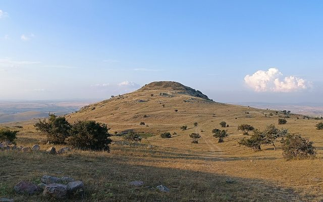
Ciudad antigua de KerkenesYozgat · Yacimiento arqueológico Ciudad subterránea de Sulu Mağara (Keskin)Kırıkkale · Ciudad subterránea
Ciudad subterránea de Sulu Mağara (Keskin)Kırıkkale · Ciudad subterránea Key MuseumIzmir · Museo
Key MuseumIzmir · Museo Yacimiento de CibyraBurdur · Yacimiento arqueológicoMuseo de KilisKilis · Museo
Yacimiento de CibyraBurdur · Yacimiento arqueológicoMuseo de KilisKilis · Museo KilistraKonya · Yacimiento arqueológico
KilistraKonya · Yacimiento arqueológico Museo del Castillo de KilitbahirÇanakkale · Museo
Museo del Castillo de KilitbahirÇanakkale · Museo Castillo de KilitbahirÇanakkale · Castillo y edificio históricoKitanauraAntalya · Yacimiento arqueológico
Castillo de KilitbahirÇanakkale · Castillo y edificio históricoKitanauraAntalya · Yacimiento arqueológico Yacimiento de ClarosIzmir · Yacimiento arqueológicoYacimiento de ClazómenasIzmir · Yacimiento arqueológicoMuseo Arqueológico de KocaeliKocaeli · Museo
Yacimiento de ClarosIzmir · Yacimiento arqueológicoYacimiento de ClazómenasIzmir · Yacimiento arqueológicoMuseo Arqueológico de KocaeliKocaeli · Museo ColofónIzmir · Yacimiento arqueológicoComana PónticaTokat · Yacimiento arqueológico
ColofónIzmir · Yacimiento arqueológicoComana PónticaTokat · Yacimiento arqueológico Museo de KonuralpDüzce · Museo
Museo de KonuralpDüzce · Museo Museo Arqueológico de KonyaKonya · Museo
Museo Arqueológico de KonyaKonya · Museo Casa Museo de Atatürk en KonyaKonya · MuseoMuseo Etnográfico de KonyaKonya · Museo
Casa Museo de Atatürk en KonyaKonya · MuseoMuseo Etnográfico de KonyaKonya · Museo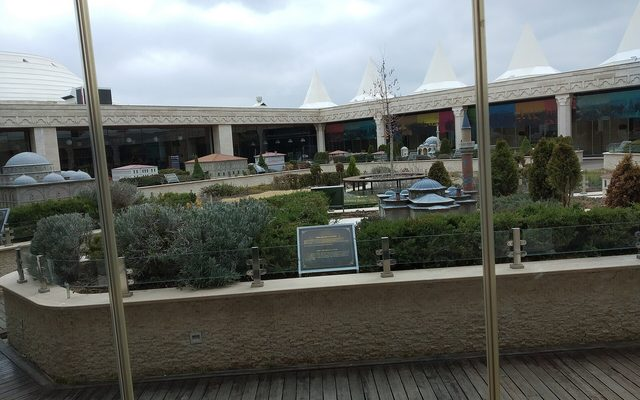
Museo Panorama de KonyaKonya · MuseoKorydallaAntalya · Yacimiento arqueológico Córico y KızkalesiMersin · Castillo y edificio histórico
Córico y KızkalesiMersin · Castillo y edificio histórico Casa Museo de KossuthKütahya · Museo
Casa Museo de KossuthKütahya · Museo Casa Museo de KossuthKütahya · Museo
Casa Museo de KossuthKütahya · Museo Koza HanBursa · Castillo y edificio históricoMuseo y yacimiento de las Tumbas RealesGazimağusa (Famagusta) · Yacimiento arqueológico
Koza HanBursa · Castillo y edificio históricoMuseo y yacimiento de las Tumbas RealesGazimağusa (Famagusta) · Yacimiento arqueológico Ciudad antigua de CremnaBurdur · Yacimiento arqueológico
Ciudad antigua de CremnaBurdur · Yacimiento arqueológico Palacio de KubadabadKonya · Yacimiento arqueológicoMuseo de la Guerra de IndependenciaAnkara · Museo
Palacio de KubadabadKonya · Yacimiento arqueológicoMuseo de la Guerra de IndependenciaAnkara · Museo Museo Monumento de Kuruköprü y Casa Tradicional de AdanaAdana · Museo
Museo Monumento de Kuruköprü y Casa Tradicional de AdanaAdana · Museo Parque Natural de la Cascada de KurşunluAntalya · Cascada
Parque Natural de la Cascada de KurşunluAntalya · Cascada Museo Kuva-yi MilliyeBalıkesir · Museo
Museo Kuva-yi MilliyeBalıkesir · Museo Ciudad antigua de CianeasAntalya · Yacimiento arqueológico
Ciudad antigua de CianeasAntalya · Yacimiento arqueológico Ciudad antigua de CimeIzmir · Yacimiento arqueológico
Ciudad antigua de CimeIzmir · Yacimiento arqueológico Ciudad antigua de CícicoBalıkesir · Yacimiento arqueológico
Ciudad antigua de CícicoBalıkesir · Yacimiento arqueológico Museo Kâzım Karabekir PaşaEstambul · Museo
Museo Kâzım Karabekir PaşaEstambul · Museo Parque Nacional del Cañón de KöprülüAntalya · Cañón
Parque Nacional del Cañón de KöprülüAntalya · Cañón Puente de Köprüpazar (Aspendos)Antalya · Castillo y edificio histórico
Puente de Köprüpazar (Aspendos)Antalya · Castillo y edificio histórico Lago KöyceğizMuğla · Lago
Lago KöyceğizMuğla · Lago Yacimiento de KültepeKayseri · Yacimiento arqueológico
Yacimiento de KültepeKayseri · Yacimiento arqueológico Castillo de KütahyaKütahya · Castillo y edificio históricoMuseo de KütahyaKütahya · MuseoIglesia de Santa Ana (Pequeña Ayvasıl)Trebisonda · Edificio religioso
Castillo de KütahyaKütahya · Castillo y edificio históricoMuseo de KütahyaKütahya · MuseoIglesia de Santa Ana (Pequeña Ayvasıl)Trebisonda · Edificio religioso Pabellón de KüçüksuEstambul · Castillo y edificio históricoMuseo de KırklareliKırklareli · MuseoMuseo de KırşehirKırşehir · Museo
Pabellón de KüçüksuEstambul · Castillo y edificio históricoMuseo de KırklareliKırklareli · MuseoMuseo de KırşehirKırşehir · Museo Torre de la DoncellaEstambul · Castillo y edificio histórico
Torre de la DoncellaEstambul · Castillo y edificio histórico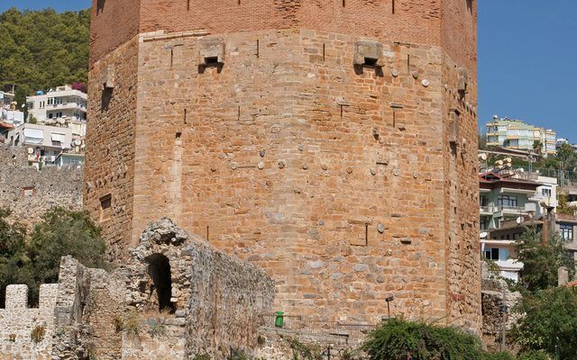
Kızılkule (Torre Roja)Antalya · Castillo y edificio histórico Yacimiento de LabraundaMuğla · Yacimiento arqueológico
Yacimiento de LabraundaMuğla · Yacimiento arqueológico Yacimiento de LaginaMuğla · Yacimiento arqueológico
Yacimiento de LaginaMuğla · Yacimiento arqueológico Mezquita de Lala Mustafa PacháGazimağusa (Famagusta) · Edificio religiosoLambousaGirne (Kyrenia) · Yacimiento arqueológicoLamosAntalya · Yacimiento arqueológico
Mezquita de Lala Mustafa PacháGazimağusa (Famagusta) · Edificio religiosoLambousaGirne (Kyrenia) · Yacimiento arqueológicoLamosAntalya · Yacimiento arqueológico Yacimiento de LaodiceaDenizli · Yacimiento arqueológico
Yacimiento de LaodiceaDenizli · Yacimiento arqueológico Museo LapidarioLefkoşa (Nicosia) · Museo
Museo LapidarioLefkoşa (Nicosia) · Museo Casa Memorial de Latife HanımIzmir · MuseoMansión LatifoğluTokat · Museo
Casa Memorial de Latife HanımIzmir · MuseoMansión LatifoğluTokat · Museo LébedosIzmir · Yacimiento arqueológico
LébedosIzmir · Yacimiento arqueológico Museo de las Civilizaciones Licias y yacimiento de AndriakeAntalya · Yacimiento arqueológico
Museo de las Civilizaciones Licias y yacimiento de AndriakeAntalya · Yacimiento arqueológico Camino LicioMuğla · Ruta de senderismo
Camino LicioMuğla · Ruta de senderismo Yacimiento de LimyraAntalya · Yacimiento arqueológicoMuseo Etnográfico de la Mansión de LivapaşaKastamonu · Museo
Yacimiento de LimyraAntalya · Yacimiento arqueológicoMuseo Etnográfico de la Mansión de LivapaşaKastamonu · Museo Fortaleza de LorymaMuğla · Yacimiento arqueológico
Fortaleza de LorymaMuğla · Yacimiento arqueológico Monumento de Lausana y estación de KaraağaçEdirne · Castillo y edificio histórico
Monumento de Lausana y estación de KaraağaçEdirne · Castillo y edificio histórico Museo de la Espuma de MarEskişehir · MuseoMuseo de la MineríaZonguldak · Museo
Museo de la Espuma de MarEskişehir · MuseoMuseo de la MineríaZonguldak · Museo Ciudad antigua de MagarsoAdana · Yacimiento arqueológico
Ciudad antigua de MagarsoAdana · Yacimiento arqueológico Yacimiento de MagnesiaAydın · Yacimiento arqueológico
Yacimiento de MagnesiaAydın · Yacimiento arqueológico Mezquita de Mahmut BeyKastamonu · Edificio religioso
Mezquita de Mahmut BeyKastamonu · Edificio religioso Puente de MalabadiDiyarbakır · Castillo y edificio históricoCasa Memorial de Atatürk y Museo Etnográfico de MalatyaMalatya · Museo
Puente de MalabadiDiyarbakır · Castillo y edificio históricoCasa Memorial de Atatürk y Museo Etnográfico de MalatyaMalatya · Museo Museo de MalatyaMalatya · MuseoMuseo de MalazgirtMuş · Museo
Museo de MalatyaMalatya · MuseoMuseo de MalazgirtMuş · Museo Castillo de MamureMersin · Castillo y edificio histórico
Castillo de MamureMersin · Castillo y edificio histórico Cascada de ManavgatAntalya · Cascada
Cascada de ManavgatAntalya · Cascada Museo de Akhisar y Necrópolis de Tepe (Manisa)Manisa · Yacimiento arqueológico
Museo de Akhisar y Necrópolis de Tepe (Manisa)Manisa · Yacimiento arqueológico Museo de ManisaManisa · Museo
Museo de ManisaManisa · Museo Museo de MardinMardin · MuseoMuseo de MarmarisMuğla · Museo
Museo de MardinMardin · MuseoMuseo de MarmarisMuğla · Museo Pabellones de MaslakEstambul · Castillo y edificio histórico
Pabellones de MaslakEstambul · Castillo y edificio histórico Museo de la InocenciaEstambul · MuseoCiudad subterránea de MazıNevşehir · Ciudad subterráneaMaşat HöyükTokat · Yacimiento arqueológicoMuseo-Biblioteca de Literatura Mehmet Akif ErsoyAnkara · Museo
Museo de la InocenciaEstambul · MuseoCiudad subterránea de MazıNevşehir · Ciudad subterráneaMaşat HöyükTokat · Yacimiento arqueológicoMuseo-Biblioteca de Literatura Mehmet Akif ErsoyAnkara · Museo Casa Memorial de Mehmet Akif ErsoyEstambul · MuseoMuseo Arqueológico Mehmet Cabir AlperBatman · Museo
Casa Memorial de Mehmet Akif ErsoyEstambul · MuseoMuseo Arqueológico Mehmet Cabir AlperBatman · Museo Lago MekeKonya · Lago
Lago MekeKonya · Lago Arroyo MelenDüzce · Rafting
Arroyo MelenDüzce · Rafting Puente del Meriç (Mecidiye)Edirne · Castillo y edificio histórico
Puente del Meriç (Mecidiye)Edirne · Castillo y edificio histórico Casa Museo de Atatürk en MersinMersin · Museo
Casa Museo de Atatürk en MersinMersin · Museo Castillo de la Doncella de Mersin (Kızkalesi)Mersin · Castillo y edificio históricoMuseo de MersinMersin · MuseoMuseo de TarsoMersin · Museo
Castillo de la Doncella de Mersin (Kızkalesi)Mersin · Castillo y edificio históricoMuseo de MersinMersin · MuseoMuseo de TarsoMersin · Museo Casa de la Virgen MaríaIzmir · Edificio religioso
Casa de la Virgen MaríaIzmir · Edificio religioso Monasterio de la Virgen MaríaGiresun · Edificio religioso
Monasterio de la Virgen MaríaGiresun · Edificio religioso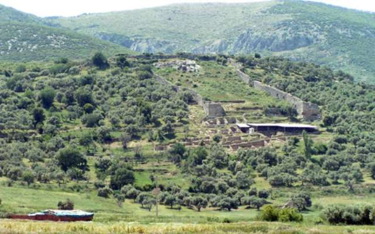
Yacimiento de MetrópolisIzmir · Yacimiento arqueológico Museo de MevlanaKonya · Museo
Museo de MevlanaKonya · Museo Museo del Tekke MevlevíLefkoşa (Nicosia) · MuseoMuseo MevlevihaneAntalya · Museo
Museo del Tekke MevlevíLefkoşa (Nicosia) · MuseoMuseo MevlevihaneAntalya · Museo MezgitkaleMersin · Yacimiento arqueológico
MezgitkaleMersin · Yacimiento arqueológico Meher KapıVan · Yacimiento arqueológico
Meher KapıVan · Yacimiento arqueológico Yacimiento de Midas (Yazılıkaya)Eskişehir · Yacimiento arqueológico
Yacimiento de Midas (Yazılıkaya)Eskişehir · Yacimiento arqueológico Mezquita de Mihrimah Sultan (Edirnekapı)Estambul · Edificio religioso
Mezquita de Mihrimah Sultan (Edirnekapı)Estambul · Edificio religioso Castillo y yacimiento de Beçin (Milas)Muğla · Yacimiento arqueológico
Castillo y yacimiento de Beçin (Milas)Muğla · Yacimiento arqueológico Yacimiento de Euromos (Milas)Muğla · Yacimiento arqueológicoMuseo de Obras en Piedra de MilasMuğla · MuseoMausoleo de Hecatomno (Uzunyuva)Muğla · Yacimiento arqueológico
Yacimiento de Euromos (Milas)Muğla · Yacimiento arqueológicoMuseo de Obras en Piedra de MilasMuğla · MuseoMausoleo de Hecatomno (Uzunyuva)Muğla · Yacimiento arqueológico Tumba Monumental y Complejo Museístico de Uzunyuva (Milas)Muğla · Yacimiento arqueológicoMuseo del Mercado de Pescado de Iasos (Milas)Muğla · Museo
Tumba Monumental y Complejo Museístico de Uzunyuva (Milas)Muğla · Yacimiento arqueológicoMuseo del Mercado de Pescado de Iasos (Milas)Muğla · Museo Museo de MiletoAydın · Museo
Museo de MiletoAydın · Museo Yacimiento de MiletoAydın · Yacimiento arqueológico
Yacimiento de MiletoAydın · Yacimiento arqueológico Museo Mimar Sinan y de la CiudadKayseri · Museo
Museo Mimar Sinan y de la CiudadKayseri · Museo MiniatürkEstambul · Museo
MiniatürkEstambul · Museo Misis (Mopsuestia)Adana · Yacimiento arqueológico
Misis (Mopsuestia)Adana · Yacimiento arqueológico Museo de Mosaicos de MisisAdana · Museo
Museo de Mosaicos de MisisAdana · Museo Museo de Industria y Tecnología MKEAnkara · Museo
Museo de Industria y Tecnología MKEAnkara · Museo Monasterio de Mor GabrielMardin · Edificio religiosoMuseo de Historia Natural MTA ŞehvarAnkara · MuseoCiudad subterránea de MucurKırşehir · Ciudad subterránea
Monasterio de Mor GabrielMardin · Edificio religiosoMuseo de Historia Natural MTA ŞehvarAnkara · MuseoCiudad subterránea de MucurKırşehir · Ciudad subterránea Casa Museo del Armisticio de MudanyaBursa · Museo
Casa Museo del Armisticio de MudanyaBursa · Museo Complejo de MuradiyeBursa · Edificio religioso
Complejo de MuradiyeBursa · Edificio religioso Cascada de MuradiyeVan · Cascada
Cascada de MuradiyeVan · Cascada Mustafapaşa (Sinasos)Nevşehir · Castillo y edificio histórico
Mustafapaşa (Sinasos)Nevşehir · Castillo y edificio histórico Museo Monumento del Mausoleo de BodrumMuğla · Museo
Museo Monumento del Mausoleo de BodrumMuğla · Museo Yacimiento de CnidoMuğla · Yacimiento arqueológico
Yacimiento de CnidoMuğla · Yacimiento arqueológico Museo de MuğlaMuğla · MuseoMuseo de MuşMuş · Museo
Museo de MuğlaMuğla · MuseoMuseo de MuşMuş · Museo Ciudad antigua de MindoMuğla · Yacimiento arqueológico
Ciudad antigua de MindoMuğla · Yacimiento arqueológico Yacimiento de MyraAntalya · Yacimiento arqueológico
Yacimiento de MyraAntalya · Yacimiento arqueológico Ciudad antigua de MiunteAydın · Yacimiento arqueológico
Ciudad antigua de MiunteAydın · Yacimiento arqueológico Müze GazhaneEstambul · MuseoNacolea y Complejo de SeyitgaziEskişehir · Edificio religioso
Müze GazhaneEstambul · MuseoNacolea y Complejo de SeyitgaziEskişehir · Edificio religioso Museo del Bastión de NamazgâhÇanakkale · Museo
Museo del Bastión de NamazgâhÇanakkale · Museo Castillo de Namrun (Lampron)Mersin · Castillo y edificio históricoCasa Museo de Namık KemalTekirdağ · Museo
Castillo de Namrun (Lampron)Mersin · Castillo y edificio históricoCasa Museo de Namık KemalTekirdağ · Museo Mazmorra y Museo de Namık KemalGazimağusa (Famagusta) · MuseoNeandriaÇanakkale · Yacimiento arqueológico
Mazmorra y Museo de Namık KemalGazimağusa (Famagusta) · MuseoNeandriaÇanakkale · Yacimiento arqueológico Casa de Necmi İğe - Museo EtnográficoEdirne · Museo
Casa de Necmi İğe - Museo EtnográficoEdirne · Museo Lago del cráter de NemrutBitlis · LagoMuseo de Arqueología y Etnografía de HacıbektaşNevşehir · MuseoCasa Museo de Atatürk en HacıbektaşNevşehir · Museo
Lago del cráter de NemrutBitlis · LagoMuseo de Arqueología y Etnografía de HacıbektaşNevşehir · MuseoCasa Museo de Atatürk en HacıbektaşNevşehir · Museo Museo de NevşehirNevşehir · MuseoImaret de Nilüfer Hatun - Museo de Arte Turco e IslámicoBursa · MuseoYacimiento de Andaval (Niğde)Niğde · Yacimiento arqueológicoMuseo de NiğdeNiğde · Museo
Museo de NevşehirNevşehir · MuseoImaret de Nilüfer Hatun - Museo de Arte Turco e IslámicoBursa · MuseoYacimiento de Andaval (Niğde)Niğde · Yacimiento arqueológicoMuseo de NiğdeNiğde · Museo Ciudad antigua de NotionIzmir · Yacimiento arqueológico
Ciudad antigua de NotionIzmir · Yacimiento arqueológico Palacio de Ninfeo (Nif)Izmir · Castillo y edificio histórico
Palacio de Ninfeo (Nif)Izmir · Castillo y edificio histórico Yacimiento de Nisa (Sultanhisar)Aydın · Yacimiento arqueológico
Yacimiento de Nisa (Sultanhisar)Aydın · Yacimiento arqueológico Museo de Ciencia y Tecnología de la METUAnkara · Museo
Museo de Ciencia y Tecnología de la METUAnkara · Museo Museo Moderno de OdunpazarıEskişehir · MuseoCiudad antigua de EnoandaMuğla · Yacimiento arqueológico
Museo Moderno de OdunpazarıEskişehir · MuseoCiudad antigua de EnoandaMuğla · Yacimiento arqueológico Ciudad antigua de OlbaMersin · Yacimiento arqueológico
Ciudad antigua de OlbaMersin · Yacimiento arqueológico Oluz HöyükAmasya · Yacimiento arqueológico
Oluz HöyükAmasya · Yacimiento arqueológico Yacimiento de OlymposAntalya · Yacimiento arqueológicoPuente de los Diez Ojos (Puente del Tigris)Diyarbakır · Castillo y edificio históricoMuseo de OrduOrdu · Museo
Yacimiento de OlymposAntalya · Yacimiento arqueológicoPuente de los Diez Ojos (Puente del Tigris)Diyarbakır · Castillo y edificio históricoMuseo de OrduOrdu · Museo Museo Orhan KemalEstambul · Museo
Museo Orhan KemalEstambul · Museo Museo Osman Hamdi BeyKocaeli · MuseoMuseo de OsmaniyeOsmaniye · MuseoMuseo de la Casa OtomanaBursa · Museo
Museo Osman Hamdi BeyKocaeli · MuseoMuseo de OsmaniyeOsmaniye · MuseoMuseo de la Casa OtomanaBursa · Museo Castillo de OteloGazimağusa (Famagusta) · Castillo y edificio histórico
Castillo de OteloGazimağusa (Famagusta) · Castillo y edificio histórico Oylum HöyükKilis · Yacimiento arqueológico
Oylum HöyükKilis · Yacimiento arqueológico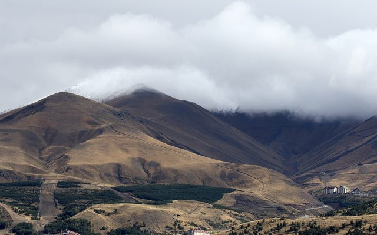
Estación de esquí de PalandökenErzurum · Estación de esquí Museo Panorama 1453Estambul · Museo
Museo Panorama 1453Estambul · Museo Ciudad antigua de ParioÇanakkale · Yacimiento arqueológico
Ciudad antigua de ParioÇanakkale · Yacimiento arqueológico Yacimiento de PataraAntalya · Yacimiento arqueológico
Yacimiento de PataraAntalya · Yacimiento arqueológico Ciudad antigua de PedasaMuğla · Yacimiento arqueológicoPednelissosAntalya · Yacimiento arqueológico
Ciudad antigua de PedasaMuğla · Yacimiento arqueológicoPednelissosAntalya · Yacimiento arqueológico Museo PeraEstambul · Museo
Museo PeraEstambul · Museo Yacimiento de PergeAntalya · Yacimiento arqueológicoPerpereneBalıkesir · Yacimiento arqueológico
Yacimiento de PergeAntalya · Yacimiento arqueológicoPerpereneBalıkesir · Yacimiento arqueológico Yacimiento de PerreAdıyaman · Yacimiento arqueológico
Yacimiento de PerreAdıyaman · Yacimiento arqueológico Yacimiento de PesinunteEskişehir · Yacimiento arqueológico
Yacimiento de PesinunteEskişehir · Yacimiento arqueológico Yacimiento de FaselisAntalya · Yacimiento arqueológico
Yacimiento de FaselisAntalya · Yacimiento arqueológico Ciudad antigua de FelosAntalya · Yacimiento arqueológico
Ciudad antigua de FelosAntalya · Yacimiento arqueológico Focea (Foça)Izmir · Yacimiento arqueológico
Focea (Foça)Izmir · Yacimiento arqueológico Museo Pierre LotiEstambul · Museo
Museo Pierre LotiEstambul · Museo Antioquía de PisidiaIsparta · Yacimiento arqueológicoCiudad antigua de Pompeyópolis (Paflagonia)Kastamonu · Yacimiento arqueológico
Antioquía de PisidiaIsparta · Yacimiento arqueológicoCiudad antigua de Pompeyópolis (Paflagonia)Kastamonu · Yacimiento arqueológico Yacimiento de PrieneAydın · Yacimiento arqueológico
Yacimiento de PrieneAydın · Yacimiento arqueológico Prusias ad Hypium (Konuralp)Düzce · Yacimiento arqueológico
Prusias ad Hypium (Konuralp)Düzce · Yacimiento arqueológico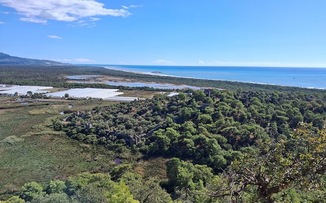
PydnaiMuğla · Yacimiento arqueológico Museo Rahmi M. KoçEstambul · Museo
Museo Rahmi M. KoçEstambul · Museo Cuartel de Rami (Biblioteca Rami)Estambul · Castillo y edificio histórico
Cuartel de Rami (Biblioteca Rami)Estambul · Castillo y edificio histórico Museo de Pintura y EsculturaAnkara · Museo
Museo de Pintura y EsculturaAnkara · Museo Museo Rezan HasEstambul · Museo
Museo Rezan HasEstambul · Museo Ciudad antigua de RodiápolisAntalya · Yacimiento arqueológico
Ciudad antigua de RodiápolisAntalya · Yacimiento arqueológico Casa Museo de Atatürk en RizeRize · MuseoMuseo de RizeRize · Museo
Casa Museo de Atatürk en RizeRize · MuseoMuseo de RizeRize · Museo Termas romanas de AnkaraAnkara · Yacimiento arqueológico
Termas romanas de AnkaraAnkara · Yacimiento arqueológico Fortaleza de Rumeli HisarıEstambul · Castillo y edificio histórico
Fortaleza de Rumeli HisarıEstambul · Castillo y edificio histórico Yacimiento de RumkaleGaziantep · Yacimiento arqueológico
Yacimiento de RumkaleGaziantep · Yacimiento arqueológico Mezquita de Rüstem PaşaEstambul · Edificio religioso
Mezquita de Rüstem PaşaEstambul · Edificio religioso Museo Sadberk HanımEstambul · Museo
Museo Sadberk HanımEstambul · Museo Yacimiento de SagalassosBurdur · Yacimiento arqueológico
Yacimiento de SagalassosBurdur · Yacimiento arqueológico Madrasa de SahabiyeKayseri · Edificio religioso
Madrasa de SahabiyeKayseri · Edificio religioso Museo Sait Faik AbasıyanıkEstambul · Museo
Museo Sait Faik AbasıyanıkEstambul · Museo Museo de SakaryaSakarya · Museo
Museo de SakaryaSakarya · Museo Cañón de SaklıkentMuğla · Cañón
Cañón de SaklıkentMuğla · Cañón Museo de la Ciudad de Mardin Sakıp SabancıMardin · Museo
Museo de la Ciudad de Mardin Sakıp SabancıMardin · Museo Museo Sakıp SabancıEstambul · Museo
Museo Sakıp SabancıEstambul · Museo Yacimiento de SalaminaGazimağusa (Famagusta) · Yacimiento arqueológico
Yacimiento de SalaminaGazimağusa (Famagusta) · Yacimiento arqueológico Lago SaldaBurdur · Lago
Lago SaldaBurdur · Lago SALT GalataEstambul · Museo
SALT GalataEstambul · Museo Museo de SamsunSamsun · Museo
Museo de SamsunSamsun · Museo Lago SapancaSakarya · Lago
Lago SapancaSakarya · Lago Ciudad subterránea de Saratlı KırkgözAksaray · Ciudad subterránea
Ciudad subterránea de Saratlı KırkgözAksaray · Ciudad subterránea Yacimiento de SardesManisa · Yacimiento arqueológico
Yacimiento de SardesManisa · Yacimiento arqueológico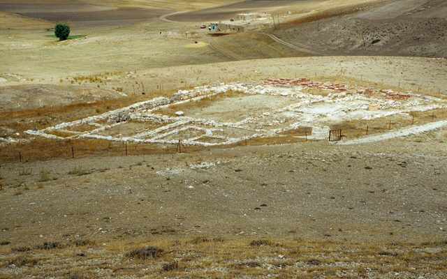
Sarissa (Kuşaklı)Sivas · Yacimiento arqueológico SarıhanNevşehir · Castillo y edificio histórico
SarıhanNevşehir · Castillo y edificio histórico Estación de esquí de SarıkamışKars · Estación de esquí
Estación de esquí de SarıkamışKars · Estación de esquí Baño romano de SarıkayaYozgat · Yacimiento arqueológico
Baño romano de SarıkayaYozgat · Yacimiento arqueológico SatalaGümüşhane · Yacimiento arqueológicoSebastópolisTokat · Yacimiento arqueológico
SatalaGümüşhane · Yacimiento arqueológicoSebastópolisTokat · Yacimiento arqueológico SebedaAntalya · Yacimiento arqueológico
SebedaAntalya · Yacimiento arqueológico Isla de Sedir (Cedreas)Muğla · Yacimiento arqueológico
Isla de Sedir (Cedreas)Muğla · Yacimiento arqueológico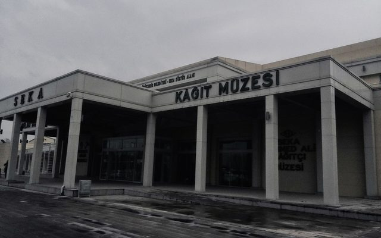
Museo del Papel SEKAKocaeli · Museo Ciudad antigua de Seleucia (Panfilia)Antalya · Yacimiento arqueológico
Ciudad antigua de Seleucia (Panfilia)Antalya · Yacimiento arqueológico Ciudad antigua de SelgeAntalya · Yacimiento arqueológico
Ciudad antigua de SelgeAntalya · Yacimiento arqueológico Mezquita SelimiyeLefkoşa (Nicosia) · Edificio religioso
Mezquita SelimiyeLefkoşa (Nicosia) · Edificio religioso Ciudad antigua de Selinunte (Cilicia)Antalya · Yacimiento arqueológico
Ciudad antigua de Selinunte (Cilicia)Antalya · Yacimiento arqueológico Museo de SideAntalya · Museo
Museo de SideAntalya · Museo Yacimiento de SideAntalya · Yacimiento arqueológico
Yacimiento de SideAntalya · Yacimiento arqueológico Ciudad antigua de SidimaMuğla · Yacimiento arqueológico
Ciudad antigua de SidimaMuğla · Yacimiento arqueológico Cueva de Astım (Silifke)Mersin · Espacio natural
Cueva de Astım (Silifke)Mersin · Espacio natural Casa de Atatürk y Museo Etnográfico de SilifkeMersin · Museo
Casa de Atatürk y Museo Etnográfico de SilifkeMersin · Museo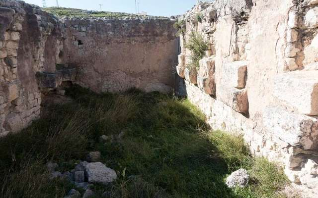
Yacimiento de Ayatekla (Silifke)Mersin · Yacimiento arqueológico Simas del Cielo y el Infierno (Silifke)Mersin · Espacio natural
Simas del Cielo y el Infierno (Silifke)Mersin · Espacio natural Castillo de SilifkeMersin · Castillo y edificio histórico
Castillo de SilifkeMersin · Castillo y edificio histórico Museo de SilifkeMersin · Museo
Museo de SilifkeMersin · Museo Museo de los Mosaicos de Narlıkuyu (Silifke)Mersin · Museo
Museo de los Mosaicos de Narlıkuyu (Silifke)Mersin · Museo Sille e iglesia de Santa ElenaKonya · Edificio religioso
Sille e iglesia de Santa ElenaKonya · Edificio religioso Ciudad antigua de SillyonAntalya · Yacimiento arqueológicoCasa Museo de Atatürk en SilvanDiyarbakır · Museo
Ciudad antigua de SillyonAntalya · Yacimiento arqueológicoCasa Museo de Atatürk en SilvanDiyarbakır · Museo Yacimiento de SimenaAntalya · Yacimiento arqueológicoMuseo Etnográfico Arslantorunlar de SinopSinop · MuseoMuseo de SinopSinop · Museo
Yacimiento de SimenaAntalya · Yacimiento arqueológicoMuseo Etnográfico Arslantorunlar de SinopSinop · MuseoMuseo de SinopSinop · Museo Sirkeli HöyükAdana · Yacimiento arqueológico
Sirkeli HöyükAdana · Yacimiento arqueológico Museo Arqueológico de SivasSivas · Museo
Museo Arqueológico de SivasSivas · Museo Museo de Atatürk y del Congreso de SivasSivas · Museo
Museo de Atatürk y del Congreso de SivasSivas · Museo Ciudad antigua de SobesosNevşehir · Yacimiento arqueológicoYacimiento de SobesosNevşehir · Yacimiento arqueológicoTumba Monumental de SofrazAdıyaman · Yacimiento arqueológico
Ciudad antigua de SobesosNevşehir · Yacimiento arqueológicoYacimiento de SobesosNevşehir · Yacimiento arqueológicoTumba Monumental de SofrazAdıyaman · Yacimiento arqueológico Castillo de SoftaMersin · Castillo y edificio histórico
Castillo de SoftaMersin · Castillo y edificio histórico Soli PompeyópolisMersin · Yacimiento arqueológico
Soli PompeyópolisMersin · Yacimiento arqueológico Yacimiento de SoliLefke (Lefka) · Yacimiento arqueológicoSoğmatarŞanlıurfa · Yacimiento arqueológico
Yacimiento de SoliLefke (Lefka) · Yacimiento arqueológicoSoğmatarŞanlıurfa · Yacimiento arqueológico Iglesia de San Antonio de PaduaEstambul · Edificio religioso
Iglesia de San Antonio de PaduaEstambul · Edificio religioso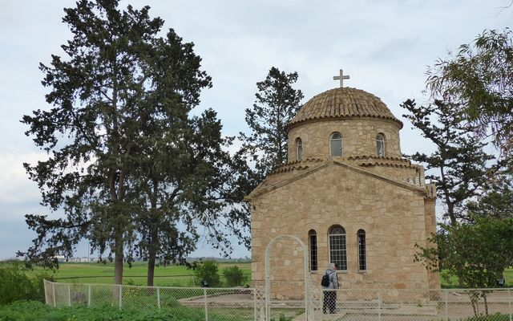
Monasterio de San BernabéGazimağusa (Famagusta) · Edificio religioso Castillo de San HilariónGirne (Kyrenia) · Castillo y edificio histórico
Castillo de San HilariónGirne (Kyrenia) · Castillo y edificio histórico Museo Monumento de San PedroHatay · Museo
Museo Monumento de San PedroHatay · Museo Monasterio de San SimeónHatay · Edificio religioso
Monasterio de San SimeónHatay · Edificio religioso Yacimiento de EstratoniceaMuğla · Yacimiento arqueológico
Yacimiento de EstratoniceaMuğla · Yacimiento arqueológico Museo de la Salud del Complejo de Bayezid IIEdirne · Museo
Museo de la Salud del Complejo de Bayezid IIEdirne · Museo Mezquita del Sultán Ahmed (Mezquita Azul)Estambul · Edificio religioso
Mezquita del Sultán Ahmed (Mezquita Azul)Estambul · Edificio religioso Plaza de Sultanahmet (Hipódromo)Estambul · Yacimiento arqueológico
Plaza de Sultanahmet (Hipódromo)Estambul · Yacimiento arqueológico Caravasar de SultanhanıAksaray · Castillo y edificio históricoCamino de los SultanesEdirne · Ruta de senderismo
Caravasar de SultanhanıAksaray · Castillo y edificio históricoCamino de los SultanesEdirne · Ruta de senderismo Ciudad antigua de SuraAntalya · Yacimiento arqueológico
Ciudad antigua de SuraAntalya · Yacimiento arqueológico Iglesia armenia de Surp GiragosDiyarbakır · Edificio religioso
Iglesia armenia de Surp GiragosDiyarbakır · Edificio religioso Cascada de SuuçtuBursa · Cascada
Cascada de SuuçtuBursa · Cascada Museo Ertuğrul Gazi de SöğütBilecik · Museo
Museo Ertuğrul Gazi de SöğütBilecik · Museo Mezquita de SüleymaniyeEstambul · Edificio religioso
Mezquita de SüleymaniyeEstambul · Edificio religioso Monasterio de SumelaTrebisonda · Edificio religiosoMuseo Etnográfico de TahtakuşlarBalıkesir · MuseoMuseo Monumento de TaxiarchisBalıkesir · Museo
Monasterio de SumelaTrebisonda · Edificio religiosoMuseo Etnográfico de TahtakuşlarBalıkesir · MuseoMuseo Monumento de TaxiarchisBalıkesir · Museo TapureliMersin · Yacimiento arqueológico
TapureliMersin · Yacimiento arqueológico Prisión histórica de SinopSinop · Castillo y edificio histórico
Prisión histórica de SinopSinop · Castillo y edificio histórico Calzada romana de TarsoMersin · Yacimiento arqueológico
Calzada romana de TarsoMersin · Yacimiento arqueológico Gözlükule de TarsoMersin · Yacimiento arqueológico
Gözlükule de TarsoMersin · Yacimiento arqueológico Puerta de Cleopatra y Calle Antigua de TarsoMersin · Yacimiento arqueológico
Puerta de Cleopatra y Calle Antigua de TarsoMersin · Yacimiento arqueológico Museo Monumento de San Pablo (Tarso)Mersin · Museo
Museo Monumento de San Pablo (Tarso)Mersin · Museo Pozo de San Pablo (Tarso)Mersin · Edificio religioso
Pozo de San Pablo (Tarso)Mersin · Edificio religioso Ciudad subterránea de TatlarinNevşehir · Ciudad subterráneaMuseo de Máquinas de Escribir Tayfun TalipoğluEskişehir · MuseoCañón de TazıAntalya · Cañón
Ciudad subterránea de TatlarinNevşehir · Ciudad subterráneaMuseo de Máquinas de Escribir Tayfun TalipoğluEskişehir · MuseoCañón de TazıAntalya · Cañón Taşköprü (Puente de Piedra)Adana · Castillo y edificio histórico
Taşköprü (Puente de Piedra)Adana · Castillo y edificio histórico Museo de Ánforas Arslan EyceMersin · Museo
Museo de Ánforas Arslan EyceMersin · Museo Casa de Atatürk en TaşucuMersin · Museo
Casa de Atatürk en TaşucuMersin · Museo Museo al Aire Libre de Locomotoras de Vapor de TCDDAnkara · Museo
Museo al Aire Libre de Locomotoras de Vapor de TCDDAnkara · Museo Museo de la Estación de MalıköyAnkara · Museo
Museo de la Estación de MalıköyAnkara · Museo Ciudad antigua de TeimiussaAntalya · Yacimiento arqueológicoCasa Museo de Atatürk en MuratlıTekirdağ · MuseoMuseo de TekirdağTekirdağ · Museo
Ciudad antigua de TeimiussaAntalya · Yacimiento arqueológicoCasa Museo de Atatürk en MuratlıTekirdağ · MuseoMuseo de TekirdağTekirdağ · Museo Cuevas de TekkeköySamsun · Yacimiento arqueológico
Cuevas de TekkeköySamsun · Yacimiento arqueológico Yacimiento de TeosIzmir · Yacimiento arqueológico
Yacimiento de TeosIzmir · Yacimiento arqueológico Yacimiento de TermessosAntalya · Yacimiento arqueológico
Yacimiento de TermessosAntalya · Yacimiento arqueológico Foro de TeodosioEstambul · Yacimiento arqueológico
Foro de TeodosioEstambul · Yacimiento arqueológico Murallas de TeodosioEstambul · Castillo y edificio históricoTilbaşar (Turbessel)Gaziantep · Castillo y edificio histórico
Murallas de TeodosioEstambul · Castillo y edificio históricoTilbaşar (Turbessel)Gaziantep · Castillo y edificio histórico Tilmen HöyükGaziantep · Yacimiento arqueológicoMuseo de TireIzmir · Museo
Tilmen HöyükGaziantep · Yacimiento arqueológicoMuseo de TireIzmir · Museo Túnel de Tito (Vespasiano)Hatay · Yacimiento arqueológico
Túnel de Tito (Vespasiano)Hatay · Yacimiento arqueológico Museo Tofaş de Carruajes de AnatoliaBursa · MuseoCasa de Atatürk y Museo Etnográfico de TokatTokat · Museo
Museo Tofaş de Carruajes de AnatoliaBursa · MuseoCasa de Atatürk y Museo Etnográfico de TokatTokat · Museo Museo de TokatTokat · MuseoTaşhan de Tokat (Voyvoda Han)Tokat · Castillo y edificio histórico
Museo de TokatTokat · MuseoTaşhan de Tokat (Voyvoda Han)Tokat · Castillo y edificio histórico Palacio de TopkapıEstambul · Castillo y edificio histórico
Palacio de TopkapıEstambul · Castillo y edificio histórico Cascada de TortumErzurum · Cascada
Cascada de TortumErzurum · Cascada Pabellón de Atatürk en TrabzonTrebisonda · Museo
Pabellón de Atatürk en TrabzonTrebisonda · Museo Santa Sofía de TrebisondaTrebisonda · Edificio religioso
Santa Sofía de TrebisondaTrebisonda · Edificio religioso Museo de Trebisonda (Mansión Kostaki)Trebisonda · Museo
Museo de Trebisonda (Mansión Kostaki)Trebisonda · Museo Ciudad antigua de TralesAydın · Yacimiento arqueológico
Ciudad antigua de TralesAydın · Yacimiento arqueológico TrebennaAntalya · Yacimiento arqueológico
TrebennaAntalya · Yacimiento arqueológico Museo de TroyaÇanakkale · MuseoTrysaAntalya · Yacimiento arqueológico
Museo de TroyaÇanakkale · MuseoTrysaAntalya · Yacimiento arqueológico Museo de TunceliTunceli · Museo
Museo de TunceliTunceli · Museo Lago TuzAksaray · Lago
Lago TuzAksaray · Lago Tiana y la piscina romana de KemerhisarNiğde · Yacimiento arqueológico
Tiana y la piscina romana de KemerhisarNiğde · Yacimiento arqueológico TyberissosAntalya · Yacimiento arqueológico
TyberissosAntalya · Yacimiento arqueológico Museo de la Asociación Aeronáutica TurcaAnkara · Museo
Museo de la Asociación Aeronáutica TurcaAnkara · Museo Museo de Caligrafía de las Fundaciones TurcasEstambul · Museo
Museo de Caligrafía de las Fundaciones TurcasEstambul · Museo Museo de Arte Turco e IslámicoEstambul · MuseoMuseo de Arte Turco e Islámico de EdirneEdirne · Museo
Museo de Arte Turco e IslámicoEstambul · MuseoMuseo de Arte Turco e Islámico de EdirneEdirne · Museo Museo de Arte Turco-Islámico y EtnografíaErzurum · Museo
Museo de Arte Turco-Islámico y EtnografíaErzurum · Museo Museo del İş BankasıEstambul · Museo
Museo del İş BankasıEstambul · Museo Parque Natural del Cañón de UlubeyUşak · CañónMuseo de UluborluIsparta · Museo
Parque Natural del Cañón de UlubeyUşak · CañónMuseo de UluborluIsparta · Museo Museo de la Prisión de UlucanlarAnkara · Museo
Museo de la Prisión de UlucanlarAnkara · Museo Estación de esquí de UludağBursa · Estación de esquí
Estación de esquí de UludağBursa · Estación de esquí Yacimiento de UzuncaburçMersin · Yacimiento arqueológico
Yacimiento de UzuncaburçMersin · Yacimiento arqueológico UzungölTrebisonda · LagoMuseo de UşakUşak · Museo
UzungölTrebisonda · LagoMuseo de UşakUşak · Museo Cañón de VallaKastamonu · Cañón
Cañón de VallaKastamonu · Cañón Lago VanVan · Lago
Lago VanVan · Lago Fortaleza de VanVan · Castillo y edificio histórico
Fortaleza de VanVan · Castillo y edificio histórico Museo de VanVan · Museo
Museo de VanVan · Museo Puente de VardaAdana · Castillo y edificio históricoSanta Sofía de Vize (Mezquita Gazi Süleyman Paşa)Kırklareli · Edificio religioso
Puente de VardaAdana · Castillo y edificio históricoSanta Sofía de Vize (Mezquita Gazi Süleyman Paşa)Kırklareli · Edificio religioso Palacio de VouniLefke (Lefka) · Yacimiento arqueológico
Palacio de VouniLefke (Lefka) · Yacimiento arqueológico Museo Yahya KemalEstambul · Museo
Museo Yahya KemalEstambul · Museo Museo de YalvaçIsparta · Museo
Museo de YalvaçIsparta · Museo Yanartaş (Quimera)Antalya · Espacio natural
Yanartaş (Quimera)Antalya · Espacio natural YanıkhanMersin · Yacimiento arqueológico
YanıkhanMersin · Yacimiento arqueológico Parque Nacional de YedigöllerBolu · Lago
Parque Nacional de YedigöllerBolu · Lago Fortaleza de YedikuleEstambul · Castillo y edificio histórico
Fortaleza de YedikuleEstambul · Castillo y edificio histórico Casa Museo Şemaki de YenişehirBursa · Museo
Casa Museo Şemaki de YenişehirBursa · Museo Cisterna Basílica (Yerebatan)Estambul · Castillo y edificio histórico
Cisterna Basílica (Yerebatan)Estambul · Castillo y edificio histórico Yacimiento de YesemekGaziantep · Yacimiento arqueológico
Yacimiento de YesemekGaziantep · Yacimiento arqueológico Valle de Soğanlı (Yeşilhisar)Kayseri · Yacimiento arqueológico
Valle de Soğanlı (Yeşilhisar)Kayseri · Yacimiento arqueológico Yeşilova HöyükIzmir · Yacimiento arqueológico
Yeşilova HöyükIzmir · Yacimiento arqueológico Mezquita del Alminar Estriado (Yivli Minare)Antalya · Edificio religioso
Mezquita del Alminar Estriado (Yivli Minare)Antalya · Edificio religioso Museo de YozgatYozgat · Museo
Museo de YozgatYozgat · Museo Montículo de YumuktepeMersin · Yacimiento arqueológico
Montículo de YumuktepeMersin · Yacimiento arqueológico Casa Museo de Yörük Ali EfeAydın · Museo
Casa Museo de Yörük Ali EfeAydın · Museo Aldea de YörükKarabük · Castillo y edificio histórico
Aldea de YörükKarabük · Castillo y edificio histórico Yılankale (Castillo de la Serpiente)Adana · Castillo y edificio histórico
Yılankale (Castillo de la Serpiente)Adana · Castillo y edificio histórico Fábrica de Porcelana de YıldızEstambul · Museo
Fábrica de Porcelana de YıldızEstambul · Museo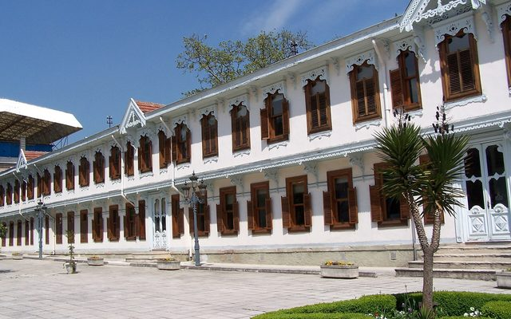
Palacio de YıldızEstambul · Castillo y edificio histórico Museo de Cera Yılmaz BüyükerşenEskişehir · Museo
Museo de Cera Yılmaz BüyükerşenEskişehir · Museo Museo de la VictoriaAfyonkarahisar · Museo
Museo de la VictoriaAfyonkarahisar · Museo Río ZamantıAdana · Rafting
Río ZamantıAdana · Rafting Zazadin HanKonya · Castillo y edificio histórico
Zazadin HanKonya · Castillo y edificio histórico Museo de Arte Zeki MürenMuğla · Museo
Museo de Arte Zeki MürenMuğla · Museo Castillo de Zengibar (Isaura)Konya · Yacimiento arqueológico
Castillo de Zengibar (Isaura)Konya · Yacimiento arqueológico Fortaleza de ZerzevanDiyarbakır · Yacimiento arqueológico
Fortaleza de ZerzevanDiyarbakır · Yacimiento arqueológico Museo de los Mosaicos de ZeugmaGaziantep · Museo
Museo de los Mosaicos de ZeugmaGaziantep · Museo Yacimiento de ZeugmaGaziantep · Yacimiento arqueológico
Yacimiento de ZeugmaGaziantep · Yacimiento arqueológico ZilkaleRize · Castillo y edificio histórico
ZilkaleRize · Castillo y edificio histórico Madrasa ZinciriyeDiyarbakır · Edificio religioso
Madrasa ZinciriyeDiyarbakır · Edificio religioso Zincirli Höyük (Sam'al)Gaziantep · Yacimiento arqueológico
Zincirli Höyük (Sam'al)Gaziantep · Yacimiento arqueológico Museo Ziya GökalpDiyarbakır · Museo
Museo Ziya GökalpDiyarbakır · Museo Museo de la Energía santralistanbulEstambul · Museo
Museo de la Energía santralistanbulEstambul · Museo Museo de Locomotoras de Vapor de ÇamlıkIzmir · Museo
Museo de Locomotoras de Vapor de ÇamlıkIzmir · Museo Museo Naval de ÇanakkaleÇanakkale · MuseoCentro de Interpretación de la Epopeya de ÇanakkaleÇanakkale · MuseoÁrea de recreación de la Media Luna Roja en ÇanakkaleÇanakkale · Museo
Museo Naval de ÇanakkaleÇanakkale · MuseoCentro de Interpretación de la Epopeya de ÇanakkaleÇanakkale · MuseoÁrea de recreación de la Media Luna Roja en ÇanakkaleÇanakkale · Museo Museo de ÇankırıÇankırı · Museo
Museo de ÇankırıÇankırı · Museo Museo del Intercambio de ÇatalcaEstambul · Museo
Museo del Intercambio de ÇatalcaEstambul · Museo ÇatıörenMersin · Yacimiento arqueológico
ÇatıörenMersin · Yacimiento arqueológico Castillo de ÇavuştepeVan · Castillo y edificio histórico
Castillo de ÇavuştepeVan · Castillo y edificio histórico ÇayönüDiyarbakır · Yacimiento arqueológico
ÇayönüDiyarbakır · Yacimiento arqueológico Museo de Arte Contemporáneo del VidrioEskişehir · Museo
Museo de Arte Contemporáneo del VidrioEskişehir · Museo Columna de Constantino (Çemberlitaş)Estambul · Castillo y edificio histórico
Columna de Constantino (Çemberlitaş)Estambul · Castillo y edificio histórico Museo Çengelhan Rahmi M. KoçAnkara · MuseoYacimiento de ÇevlikHatay · Yacimiento arqueológico
Museo Çengelhan Rahmi M. KoçAnkara · MuseoYacimiento de ÇevlikHatay · Yacimiento arqueológico Museo de ÇeşmeIzmir · Museo
Museo de ÇeşmeIzmir · Museo Museo de los Azulejos de KütahyaKütahya · Museo
Museo de los Azulejos de KütahyaKütahya · Museo Río ÇoruhArtvin · Rafting
Río ÇoruhArtvin · Rafting Museo de ÇorumÇorum · Museo
Museo de ÇorumÇorum · Museo Lago ÇıldırArdahan · LagoMuseo de ÖdemişIzmir · Museo
Lago ÇıldırArdahan · LagoMuseo de ÖdemişIzmir · Museo Cueva de ÖküziniAntalya · Yacimiento arqueológico
Cueva de ÖküziniAntalya · Yacimiento arqueológico ÖküzlüMersin · Yacimiento arqueológico
ÖküzlüMersin · Yacimiento arqueológico Ciudad subterránea de ÖzkonakNevşehir · Ciudad subterráneaMuseo de ÜrgüpNevşehir · Museo
Ciudad subterránea de ÖzkonakNevşehir · Ciudad subterráneaMuseo de ÜrgüpNevşehir · Museo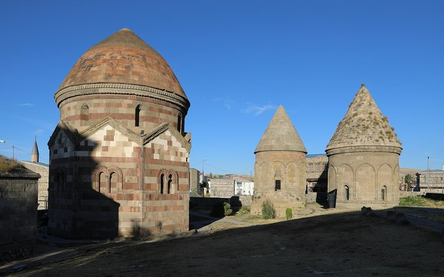
Las Tres Tumbas (Üç Kümbetler)Erzurum · Edificio religioso ÜçayaklıMersin · Yacimiento arqueológicoIdyrosAntalya · Yacimiento arqueológico
ÜçayaklıMersin · Yacimiento arqueológicoIdyrosAntalya · Yacimiento arqueológico Museo İlhan Koman de Escultura y PinturaEdirne · Museo
Museo İlhan Koman de Escultura y PinturaEdirne · Museo Museo de Medicina y Odontología İlter UzelAdana · Museo
Museo de Medicina y Odontología İlter UzelAdana · Museo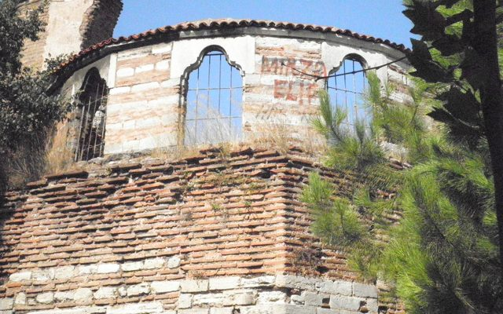
Mezquita İmrahor İlyas Bey (Monasterio de Estudios)Estambul · Edificio religiosoMuseo del Cuartel General de las Batallas de İnönüEskişehir · Museo Palacio de İshak PaşaAğrı · Castillo y edificio histórico
Palacio de İshak PaşaAğrı · Castillo y edificio histórico Museo de Iconos de İskeleİskele (Trikomo) · MuseoMuseo Naval de İskenderunHatay · Museo
Museo de Iconos de İskeleİskele (Trikomo) · MuseoMuseo Naval de İskenderunHatay · Museo Museo de Historia de la Ciencia y la Tecnología en el IslamEstambul · Museo
Museo de Historia de la Ciencia y la Tecnología en el IslamEstambul · Museo Casa Museo de İsmet İnönüEstambul · Museo
Casa Museo de İsmet İnönüEstambul · Museo Museos Arqueológicos de EstambulEstambul · Museo
Museos Arqueológicos de EstambulEstambul · Museo Museo Naval de EstambulEstambul · Museo
Museo Naval de EstambulEstambul · Museo Torre de GálataEstambul · Castillo y edificio histórico
Torre de GálataEstambul · Castillo y edificio histórico Museo de Aviación de EstambulEstambul · MuseoMuseo del Aeropuerto de EstambulEstambul · Museo
Museo de Aviación de EstambulEstambul · MuseoMuseo del Aeropuerto de EstambulEstambul · Museo Istanbul ModernEstambul · Museo
Istanbul ModernEstambul · Museo Museo del Juguete de EstambulEstambul · Museo
Museo del Juguete de EstambulEstambul · Museo Museo Arqueológico de IzmirIzmir · MuseoMuseo Atatürk de IzmirIzmir · Museo
Museo Arqueológico de IzmirIzmir · MuseoMuseo Atatürk de IzmirIzmir · Museo Fábrica de Cultura y Arte de IzmirIzmir · MuseoMuseo de Pintura y Escultura de IzmirIzmir · Museo
Fábrica de Cultura y Arte de IzmirIzmir · MuseoMuseo de Pintura y Escultura de IzmirIzmir · Museo Museo del Terremoto de İzmitKocaeli · Museo
Museo del Terremoto de İzmitKocaeli · Museo Museo de İznikBursa · Museo
Museo de İznikBursa · Museo Museo de la Ciudad İzzet KoyunoğluKonya · MuseoMuseo Arqueológico de ŞanlıurfaŞanlıurfa · Museo
Museo de la Ciudad İzzet KoyunoğluKonya · MuseoMuseo Arqueológico de ŞanlıurfaŞanlıurfa · Museo Castillo de ŞanlıurfaŞanlıurfa · Castillo y edificio histórico
Castillo de ŞanlıurfaŞanlıurfa · Castillo y edificio histórico ŞapinuvaÇorum · Yacimiento arqueológico
ŞapinuvaÇorum · Yacimiento arqueológico Şar (Comana de Capadocia)Adana · Yacimiento arqueológico
Şar (Comana de Capadocia)Adana · Yacimiento arqueológico Han de ŞarapsaAntalya · Castillo y edificio histórico
Han de ŞarapsaAntalya · Castillo y edificio histórico Casa Museo de Atatürk en ŞebinkarahisarGiresun · Museo
Casa Museo de Atatürk en ŞebinkarahisarGiresun · Museo Mezquita ŞehzadeEstambul · Edificio religioso
Mezquita ŞehzadeEstambul · Edificio religioso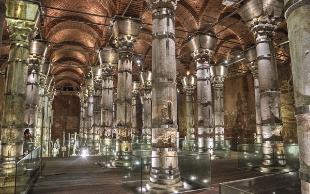
Cisterna de Şerefiye (Teodosio)Estambul · Castillo y edificio histórico Aldea de ŞirinceIzmir · Castillo y edificio históricoCiudad de ŞuaybŞanlıurfa · Yacimiento arqueológico
Aldea de ŞirinceIzmir · Castillo y edificio históricoCiudad de ŞuaybŞanlıurfa · Yacimiento arqueológico